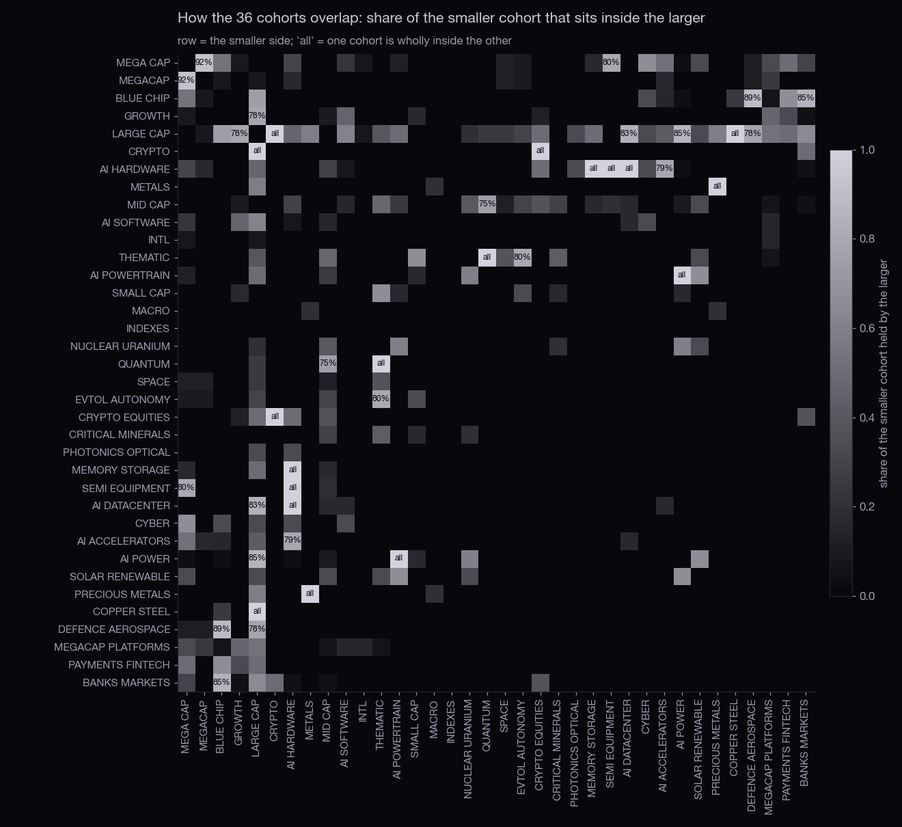
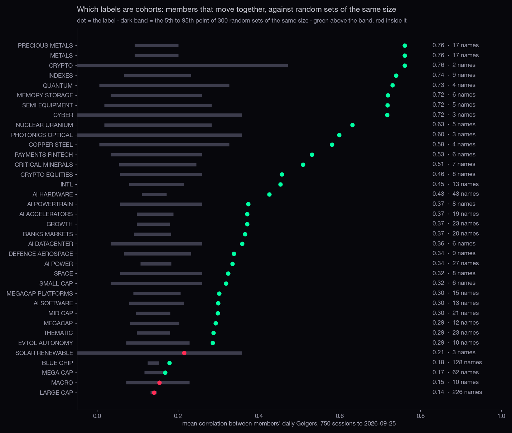
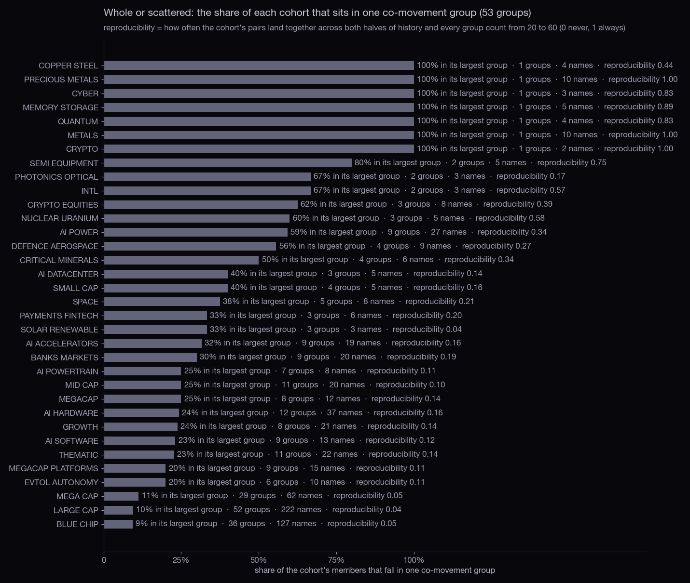
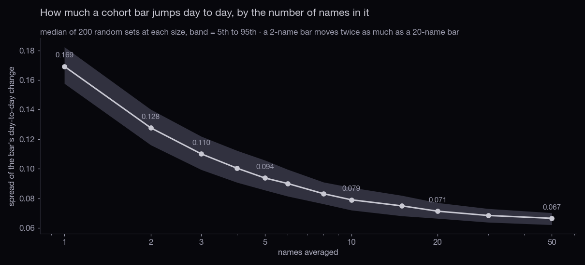
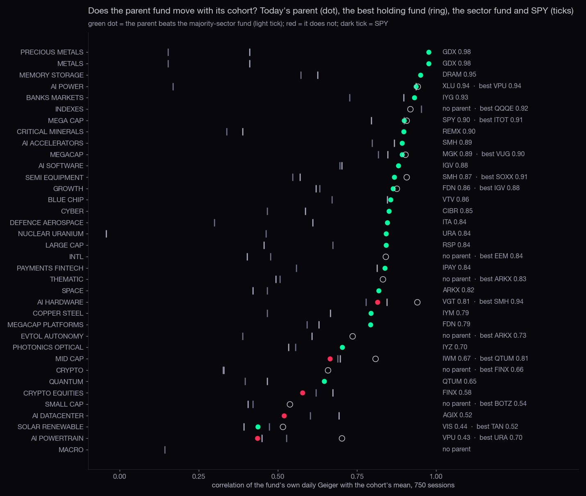
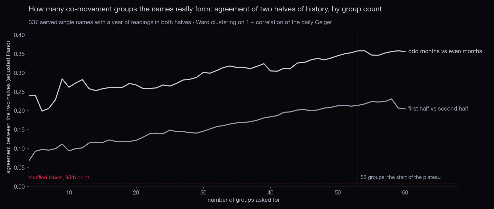
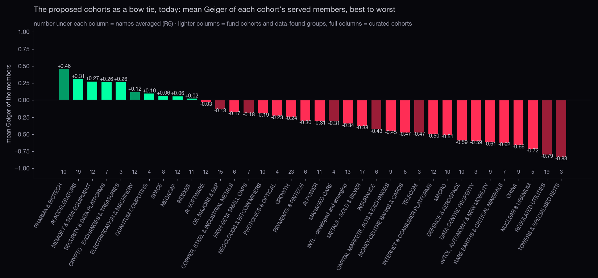
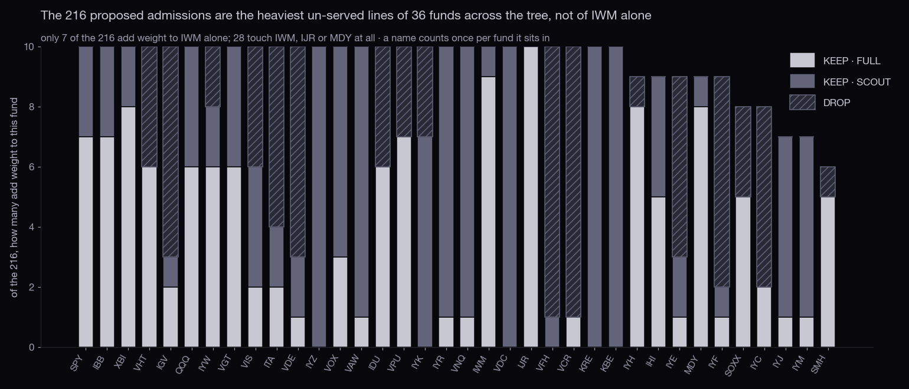
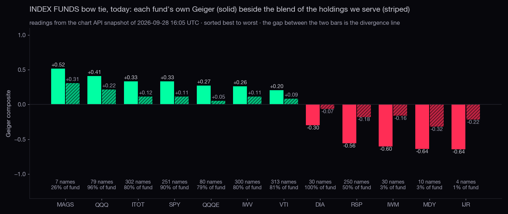
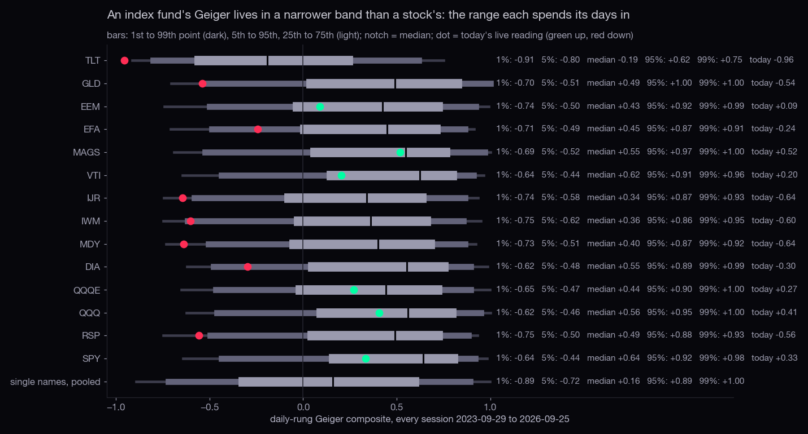

The tree gives a cohort a parent when one fund holds at least a third of its members and those members are at least 1% of the fund. Seven fail. Three are cohorts of funds (INDEXES, MACRO, INTL): no fund holds funds, so they will never have a fund parent; they belong under a heading. Two are not cohorts at all (SMALL CAP, THEMATIC). Two are themes with no fund (CRYPTO, eVTOL).
| cohort | why no parent today | members | what the proposal does |
|---|---|---|---|
| CRYPTO | the best fund, FINX, holds only 1 of 2 members | COIN MSTR | merged into CRYPTO · EXCHANGES & TREASURIES under the CRYPTO heading |
| INTL | the best fund, MCHI, holds only 2 of 13 members | ASHR BABA EEM EFA EWG EWJ EWU EWY EZU FXI JD MCHI PDD | WORLD heading; CHINA split out under MCHI |
| THEMATIC | the best fund, QTUM, holds only 5 of 23 members | ASTS AUR BIDU BYND EH EVTL FSLR IONQ JOBY LAC LCID LI MELI MP NIO ONDS PATH QBTS QS QUBT RGTI RKLB USAR | dissolved into its five themes |
| SMALL CAP | the best fund, REMX, holds only 1 of 6 members | BYND EH EOSE EVTL LAC SHAZ | a cap tranche, not a cohort |
| MACRO | no fund with holdings holds any member | GLD HYG IEF LQD SHY SLV TLT USO UUP VXX | MACRO heading (a watch list, its mean is not shown) |
| INDEXES | the best fund, QQQE, holds only 1 of 9 members | DIA IWM MAGS MDY QQQ QQQE RSP SPY VTI | US BROAD heading; the INDEX-FUNDS tab |
| EVTOL AUTONOMY | the best fund, VCR, holds only 3 of 10 members | ACHR AUR EH EVTL JOBY LCID LI NIO QS TSLA | under the discretionary heading; TSLA listed as a move |

Read a row as "how much of this cohort sits inside the column's cohort". The pairs that are wholly inside each other:
| smaller | inside | shared | of | proposal |
|---|---|---|---|---|
| METALS | PRECIOUS METALS | 17 | 17 | one cohort: METALS · GOLD & SILVER |
| AI POWERTRAIN | AI POWER | 8 | 8 | one cohort: AI POWER (Alan's eight plus ETN, PWR, VRT); the utilities go to XLU |
| MEMORY STORAGE | AI HARDWARE | 6 | 6 | MEMORY & SEMI EQUIPMENT, split out of AI HARDWARE |
| AI DATACENTER | AI HARDWARE | 6 | 6 | NEOCLOUDS & MINERS and DATA-CENTRE PROPERTY, split out |
| SEMI EQUIPMENT | AI HARDWARE | 5 | 5 | MEMORY & SEMI EQUIPMENT |
| COPPER STEEL | LARGE CAP | 4 | 4 | LARGE CAP becomes a cap tranche |
| QUANTUM | THEMATIC | 4 | 4 | THEMATIC dissolves; QUANTUM stays |
| CRYPTO | LARGE CAP | 2 | 2 | LARGE CAP becomes a cap tranche |
| CRYPTO | CRYPTO EQUITIES | 2 | 2 | CRYPTO · EXCHANGES & TREASURIES + NEOCLOUDS & MINERS |
A served name sits in 0 to 5 cohorts (distribution: 0 cohorts: 53 names, 1 cohorts: 86 names, 2 cohorts: 145 names, 3 cohorts: 122 names, 4 cohorts: 13 names, 5 cohorts: 1 names). SMR sits in five (AI POWER, AI POWERTRAIN, MID CAP, NUCLEAR, SOLAR); GEV in four. 53 served lines sit in no cohort at all, 19 of them companies: AMKR AVAV BTDR GLW HIVE HUBB NOK NVTS O OUST SATL SERV SIDU SPIR STM SYM TECK TSEM VSH.

The dot is the mean correlation between the members' daily Geigers over 750 sessions; the band is what 300 random sets of the same size give. Below or inside the band the label is not a cohort. LARGE CAP (0.14 against a band top of 0.15), MACRO (0.15, a deliberate mix of bonds, gold, oil, the dollar and the VIX: a watch list, and its mean bar means nothing) and SOLAR (0.21 with three names) fail. MEGA CAP (0.17 against 0.16) and BLUE CHIP (0.18 against 0.15) clear it by a hair: their bar is the market's bar (MEGA CAP's mean tracks SPY at 0.90). The tightest are the miners, the index funds, quantum, memory, semi equipment and cyber, all above 0.70.

The same question from the other side: once the names are grouped by how they actually move (section 3), how much of each cohort lands in one group? Seven cohorts are whole. AI HARDWARE, MID CAP, THEMATIC, AI SOFTWARE, AI ACCELERATORS, AI POWER, MEGACAP PLATFORMS and BANKS MARKETS each span nine or more groups: they are several cohorts wearing one label. This is the measure behind the splits in section 5.

Thin is a different problem. A bar built from two names swings twice as much day to day as one built from twenty (0.128 against 0.071). CRYPTO (2 names), CYBER, PHOTONICS and SOLAR (3 each) are pairs, not cohorts; rule R6 says a bar always carries its count and a pair is shown as a pair.

Today's parent was chosen by holdings share. Measured on three years of history, most parents do move with their cohort (GDX with the miners at 0.98; XLU with AI POWER at 0.94, which is really the utilities inside it; IYG with the banks at 0.93). Four do not beat the sector fund: AI HARDWARE under VGT (0.81, SMH would be 0.94), MID CAP under IWM (0.67, QTUM 0.81: because MID CAP is quantum and eVTOL names), CRYPTO EQUITIES under FINX (0.58) and AI POWERTRAIN under VPU (0.43, URA 0.70). The proposal (rule R1) picks the parent by this number.
For every name, its correlation with its own cohort's mean (leave-one-out) against the best other cohort's mean. The 30 largest gaps:
| name | sits in | own | fits better | corr | gap | GICS industry |
|---|---|---|---|---|---|---|
| NBIS | LARGE CAP | 0.04 | CRYPTO EQUITIES | 0.75 | 0.71 | Software |
| SNDK | LARGE CAP | 0.16 | SEMI EQUIPMENT | 0.79 | 0.62 | Technology Hardware, Storage & Peripherals |
| NBIS | AI SOFTWARE | 0.15 | CRYPTO EQUITIES | 0.75 | 0.59 | Software |
| USO | MACRO | -0.36 | COPPER STEEL | 0.20 | 0.56 | |
| SNOW | LARGE CAP | 0.18 | CYBER | 0.71 | 0.53 | Software |
| ALAB | LARGE CAP | 0.11 | QUANTUM | 0.64 | 0.53 | Semiconductors & Semiconductor Equipment |
| ZS | LARGE CAP | 0.15 | GROWTH | 0.68 | 0.53 | Software |
| UUP | MACRO | -0.45 | CYBER | 0.05 | 0.50 | |
| ETN | AI POWER | 0.24 | AI ACCELERATORS | 0.74 | 0.50 | Electrical Equipment |
| IONQ | LARGE CAP | 0.24 | MID CAP | 0.71 | 0.47 | Technology Hardware, Storage & Peripherals |
| XOM | MEGA CAP | -0.01 | COPPER STEEL | 0.45 | 0.46 | Oil, Gas & Consumable Fuels |
| SLB | LARGE CAP | 0.14 | COPPER STEEL | 0.60 | 0.46 | Energy Equipment & Services |
| OKLO | AI POWER | 0.44 | THEMATIC | 0.89 | 0.45 | Independent Power and Renewable Electricity Producers |
| DVN | LARGE CAP | 0.03 | COPPER STEEL | 0.47 | 0.44 | Oil, Gas & Consumable Fuels |
| DDOG | LARGE CAP | 0.22 | CYBER | 0.66 | 0.44 | Software |
| PANW | BLUE CHIP | 0.18 | AI SOFTWARE | 0.62 | 0.44 | Software |
| VLO | LARGE CAP | 0.10 | COPPER STEEL | 0.53 | 0.44 | Oil, Gas & Consumable Fuels |
| EOSE | AI POWER | 0.20 | THEMATIC | 0.64 | 0.43 | Electrical Equipment |
| SIMO | MID CAP | 0.35 | SEMI EQUIPMENT | 0.78 | 0.43 | Semiconductors & Semiconductor Equipment |
| BE | LARGE CAP | 0.17 | CRITICAL MINERALS | 0.60 | 0.42 | Electrical Equipment |
| BIDU | LARGE CAP | 0.26 | INTL | 0.67 | 0.42 | Interactive Media & Services |
| IREN | LARGE CAP | 0.34 | MID CAP | 0.75 | 0.41 | IT Services |
| WDC | LARGE CAP | 0.38 | SEMI EQUIPMENT | 0.79 | 0.41 | Technology Hardware, Storage & Peripherals |
| OXY | LARGE CAP | 0.00 | COPPER STEEL | 0.40 | 0.40 | Oil, Gas & Consumable Fuels |
| MRVL | LARGE CAP | 0.18 | AI DATACENTER | 0.58 | 0.40 | Semiconductors & Semiconductor Equipment |
| CVX | MEGA CAP | -0.06 | COPPER STEEL | 0.32 | 0.38 | Oil, Gas & Consumable Fuels |
| BE | AI POWER | 0.22 | CRITICAL MINERALS | 0.60 | 0.38 | Electrical Equipment |
| POET | AI ACCELERATORS | 0.24 | SPACE | 0.61 | 0.37 | |
| RBLX | LARGE CAP | 0.18 | EVTOL AUTONOMY | 0.55 | 0.37 | Entertainment |
| SMR | SOLAR RENEWABLE | 0.23 | CRYPTO EQUITIES | 0.60 | 0.37 | Electrical Equipment |
Most of the top of the list is LARGE CAP and MEGA CAP swallowing energy names (XOM, CVX, SLB, DVN, OXY track the industrial metals better than their size label), memory names that belong with semi equipment (SNDK, WDC), and software that belongs with the security group (SNOW, DDOG, ZS). ETN sits in AI POWER at 0.24 and tracks the accelerators at 0.74: it moves with the data-centre build, not with the utilities. The full list (785 rows) is in build/critique.json.
Names outside their cohort's majority sector, by count: LARGE CAP 191 of 226, BLUE CHIP 95 of 128, MEGA CAP 38 of 62, THEMATIC 15 of 23, GROWTH 10 of 23, MID CAP 9 of 21, MEGACAP PLATFORMS 9 of 15, MEGACAP 7 of 12, AI POWER 7 of 27, AI HARDWARE 5 of 43. For the size labels that is expected; for MEGACAP it is BA and SPCX (industrials) and for AI HARDWARE it is DLR, EQIX, ETN, VRT and WULF.
What was done. The Hub's daily-rung Geiger (the same maths as the live /geiger, replayed on the newest 230 daily bars each session) was computed for every served symbol for 750 sessions. Names were grouped by Ward clustering on 1 − correlation. The number of groups was not chosen by eye (statistician rules R2 and R6): for every count from 4 to 60 the sessions were split into two halves, each half grouped on its own, and the agreement of the two groupings measured (adjusted Rand index, 0 = chance, 1 = identical); the same with odd months against even months. The count reported is the start of the plateau: the smallest count within 0.02 of the best agreement.

What it says. Agreement rises with the count and flattens around 50: the market's co-movement units are industry-sized. At 53 groups the mean group has 6.4 names. Shuffled labels give an agreement of 0.01, so every point on the curve is far above chance, but the agreement is far from 1: about a fifth to a third of the pairings hold across halves. Each group below therefore carries a reproducibility: how often its pairs land together across both halves, both month splits and every count from 20 to 60. Background for a random pair: 0.03.
7 names with less than a year of readings in one half (new listings and reused tickers) were placed afterwards by nearest group mean and are marked placed: CRML, GEV, NBIS, OKLO, SERV, SNDK, SW.
| # | n | reproducibility | mean pair corr | members (* placed) | GICS industries | overlaps today's cohorts (held / of) |
|---|---|---|---|---|---|---|
| 8 | 10 | 1.00 | 0.74 | AEM AU CDE FNV HL KGC NEM PAAS RGLD WPM | Metals & Mining 10 | LARGE CAP 10/226, METALS 10/17, PRECIOUS METALS 10/17 |
| 2 | 3 | 1.00 | 0.76 | AMT CCI SBAC | Specialized REITs 3 | LARGE CAP 3/226 |
| 46 | 2 | 1.00 | 0.57 | ROST TJX | Specialty Retail 2 | BLUE CHIP 2/128, LARGE CAP 2/226 |
| 38 | 8 | 0.94 | 0.69 | AXP BAC C COF GS JPM MS WFC | Banks 4; Financial Services 2 | BLUE CHIP 8/128, MEGA CAP 7/62, BANKS MARKETS 6/20 |
| 41 | 10 | 0.92 | 0.74 | AMAT AMKR ASML KLAC LRCX MU SIMO SNDK* STX WDC | Semiconductors & Semiconductor Equipment 6; Technology Hardware, Storage & Peripherals 3 | AI HARDWARE 9/43, MEGA CAP 5/62, MEMORY STORAGE 5/6 |
| 35 | 5 | 0.91 | 0.62 | CCJ LEU SERV* SYM UUUU | ? 4; Oil, Gas & Consumable Fuels 1 | NUCLEAR URANIUM 3/5, LARGE CAP 1/226, AI POWERTRAIN 1/8 |
| 13 | 9 | 0.82 | 0.62 | COP CVX DVN EOG MPC OXY PSX VLO XOM | Oil, Gas & Consumable Fuels 9 | BLUE CHIP 9/128, LARGE CAP 7/226, MEGA CAP 2/62 |
| 49 | 7 | 0.80 | 0.68 | ACHR IONQ JOBY OKLO* QBTS QUBT RGTI | Technology Hardware, Storage & Peripherals 4; ? 1 | MID CAP 5/21, THEMATIC 5/23, QUANTUM 4/4 |
| 15 | 5 | 0.80 | 0.51 | GD LHX LMT NOC RTX | Aerospace & Defense 5 | BLUE CHIP 5/128, DEFENCE AEROSPACE 5/9, LARGE CAP 4/226 |
| 45 | 9 | 0.77 | 0.63 | APLD BTDR CIFR CORZ HIVE IREN NBIS* RIOT WULF | IT Services 3; ? 3 | AI HARDWARE 6/43, CRYPTO EQUITIES 5/8, MID CAP 4/21 |
| 24 | 5 | 0.75 | 0.50 | AMGN LLY MRK REGN VRTX | Pharmaceuticals 3; Biotechnology 2 | BLUE CHIP 5/128, MEGA CAP 3/62, LARGE CAP 2/226 |
| 27 | 2 | 0.75 | 0.44 | ELV UNH | Health Care Providers & Services 2 | BLUE CHIP 2/128, MEGA CAP 1/62, LARGE CAP 1/226 |
| 21 | 5 | 0.70 | 0.56 | KMI OKE PEG TRGP WMB | Oil, Gas & Consumable Fuels 4; Electric Utilities 1 | LARGE CAP 5/226, BLUE CHIP 4/128, AI POWER 1/27 |
| 37 | 7 | 0.67 | 0.57 | CRWD DDOG MDB PANW PATH SNOW ZS | Software 7 | LARGE CAP 4/226, GROWTH 3/23, AI SOFTWARE 3/13 |
| 34 | 4 | 0.66 | 0.55 | CEG COIN MSTR VST | Independent Power and Renewable Electricity Producers 2; Capital Markets 1 | LARGE CAP 4/226, CRYPTO 2/2, AI POWERTRAIN 2/8 |
| 25 | 3 | 0.61 | 0.51 | ABBV JNJ MDT | Pharmaceuticals 2; Health Care Equipment & Supplies 1 | BLUE CHIP 3/128, MEGA CAP 2/62, LARGE CAP 1/226 |
| 10 | 4 | 0.59 | 0.59 | ALB BIDU LAC SQM | ? 2; Interactive Media & Services 1 | CRITICAL MINERALS 3/7, THEMATIC 2/23, LARGE CAP 1/226 |
| 42 | 8 | 0.54 | 0.47 | AMD ARM BYND DELL NTAP NVDA QCOM SMCI | Semiconductors & Semiconductor Equipment 4; Technology Hardware, Storage & Peripherals 3 | AI ACCELERATORS 6/19, AI HARDWARE 5/43, MEGA CAP 4/62 |
| 31 | 4 | 0.51 | 0.61 | ADBE CRM INTU NOW | Software 4 | GROWTH 4/23, LARGE CAP 4/226, AI SOFTWARE 1/13 |
| 16 | 3 | 0.50 | 0.60 | GE HWM TDG | Aerospace & Defense 3 | BLUE CHIP 3/128, LARGE CAP 2/226, DEFENCE AEROSPACE 2/9 |
| 11 | 2 | 0.50 | 0.46 | CVS MNST | Health Care Providers & Services 1; Beverages 1 | LARGE CAP 2/226, BLUE CHIP 1/128 |
| 1 | 22 | 0.49 | 0.54 | AEE AEP ATO D DTE DUK ED ES ETR EXC MCD NEE O PCG PEP SO SRE VICI VTR WEC WELL XEL | Electric Utilities 14; Health Care REITs 2 | LARGE CAP 21/226, AI POWER 16/27, BLUE CHIP 2/128 |
| 4 | 3 | 0.49 | 0.38 | CME KR LI | Capital Markets 1; Consumer Staples Distribution & Retail 1 | LARGE CAP 3/226, BLUE CHIP 1/128, THEMATIC 1/23 |
| 26 | 4 | 0.48 | 0.52 | DHR OMC TMO ZETA | Life Sciences Tools & Services 2; Media 1 | BLUE CHIP 2/128, LARGE CAP 2/226, MEGA CAP 1/62 |
| 48 | 6 | 0.44 | 0.49 | AAOI BKSY LUNR PL SATL SIDU | ? 6 | SPACE 3/8, PHOTONICS OPTICAL 1/3 |
| 22 | 5 | 0.42 | 0.39 | BRK-B CB MCK PGR TRV | Insurance 4; Health Care Providers & Services 1 | BLUE CHIP 5/128, LARGE CAP 4/226, MEGA CAP 1/62 |
| 6 | 3 | 0.42 | 0.44 | CSCO GILD WBD | Communications Equipment 1; Pharmaceuticals 1 | BLUE CHIP 2/128, LARGE CAP 2/226, MEGA CAP 1/62 |
| 43 | 6 | 0.41 | 0.56 | COHR GLW LITE MRVL TSEM TSM | ? 3; Semiconductors & Semiconductor Equipment 2 | AI HARDWARE 3/43, LARGE CAP 2/226, PHOTONICS OPTICAL 2/3 |
| 17 | 8 | 0.40 | 0.58 | CRH ECL HD LIN LOW MLM SHW VMC | Construction Materials 3; Chemicals 3 | LARGE CAP 6/226, BLUE CHIP 3/128, MEGA CAP 2/62 |
| 29 | 5 | 0.39 | 0.47 | CSX MDLZ NSC SYY UNP | Ground Transportation 3; Food Products 1 | LARGE CAP 5/226, BLUE CHIP 3/128 |
| 9 | 5 | 0.38 | 0.41 | BABA EH JD MP NIO | Specialty Retail 2; Aerospace & Defense 1 | THEMATIC 3/23, LARGE CAP 2/226, INTL 2/13 |
| 7 | 6 | 0.37 | 0.41 | APD BMY CTVA DE KVUE SBUX | Chemicals 2; Pharmaceuticals 1 | LARGE CAP 6/226, BLUE CHIP 3/128 |
| 51 | 7 | 0.36 | 0.47 | HIMS HOOD ORCL PLTR RBLX SMR SPCX | Software 2; Health Care Providers & Services 1 | MEGA CAP 3/62, GROWTH 3/23, MEGACAP 2/12 |
| 12 | 7 | 0.35 | 0.53 | DOW FCX NUE SCCO STLD TECK TGT | Metals & Mining 4; Chemicals 1 | LARGE CAP 6/226, COPPER STEEL 4/4, BLUE CHIP 2/128 |
| 40 | 7 | 0.35 | 0.48 | AFRM ALAB DASH LYFT SHOP SOFI TTWO | Financial Services 2; Software 2 | GROWTH 5/23, LARGE CAP 5/226, MEGACAP PLATFORMS 3/15 |
| 33 | 8 | 0.34 | 0.54 | AMZN ANET AVGO CDNS CRDO META MSFT SNPS | Software 3; Semiconductors & Semiconductor Equipment 2 | MEGA CAP 5/62, MEGACAP 3/12, LARGE CAP 3/226 |
| 19 | 12 | 0.34 | 0.57 | CAT CMI ETN FIX GEV* HUBB JCI PH PWR TT URI VRT | Machinery 5; Electrical Equipment 2 | LARGE CAP 9/226, BLUE CHIP 8/128, AI POWER 3/27 |
| 20 | 5 | 0.33 | 0.48 | DLR EQIX IRM RDW SPIR | Specialized REITs 3; ? 2 | LARGE CAP 3/226, AI HARDWARE 2/43, AI DATACENTER 2/6 |
| 18 | 15 | 0.32 | 0.51 | AME DAL EMR GWW HLT HON ITW MAR PCAR PKG PNC PPG SW* UPS USB | Machinery 3; Hotels, Restaurants & Leisure 2 | LARGE CAP 15/226, BLUE CHIP 12/128, BANKS MARKETS 2/20 |
| 32 | 11 | 0.31 | 0.52 | BLK BX CBRE IBM ICE ISRG KKR MCO MELI SPGI UBER | Capital Markets 6; Real Estate Management & Development 1 | LARGE CAP 10/226, BLUE CHIP 8/128, BANKS MARKETS 6/20 |
| 30 | 13 | 0.30 | 0.49 | ABT ADP AON BKNG BSX DPZ MA NFLX ORLY RCL SPOT SYK V | Health Care Equipment & Supplies 3; Hotels, Restaurants & Leisure 3 | BLUE CHIP 11/128, LARGE CAP 10/226, MEGA CAP 3/62 |
| 53 | 8 | 0.30 | 0.41 | APP EOSE EVTL FOXA POET RKLB TSLA WMT | Aerospace & Defense 2; Software 1 | LARGE CAP 3/226, MEGA CAP 2/62, THEMATIC 2/23 |
| 36 | 4 | 0.28 | 0.42 | AVAV KTOS NKE PDD | ? 2; Textiles, Apparel & Luxury Goods 1 | BLUE CHIP 1/128, LARGE CAP 1/226, INTL 1/13 |
| 5 | 4 | 0.27 | 0.39 | CHTR CMCSA FAST LYV | Diversified Telecommunication Services 2; Trading Companies & Distributors 1 | LARGE CAP 4/226, BLUE CHIP 1/128 |
| 47 | 7 | 0.26 | 0.47 | APH F FSLR GM GOOG GOOGL TEL | Automobiles 2; Semiconductors & Semiconductor Equipment 2 | LARGE CAP 4/226, MEGA CAP 3/62, BLUE CHIP 3/128 |
| 14 | 5 | 0.25 | 0.39 | ADM BKR FDX PFE SLB | Energy Equipment & Services 2; Food Products 1 | LARGE CAP 5/226, BLUE CHIP 4/128 |
| 44 | 6 | 0.24 | 0.47 | ADI AXTI NOK STM TXN VSH | Semiconductors & Semiconductor Equipment 3; ? 3 | AI HARDWARE 2/43, AI ACCELERATORS 2/19, MEGA CAP 1/62 |
| 39 | 4 | 0.24 | 0.45 | ABNB DIS DKNG SCHW | Hotels, Restaurants & Leisure 2; Entertainment 1 | LARGE CAP 4/226, BLUE CHIP 2/128, GROWTH 2/23 |
| 50 | 10 | 0.24 | 0.42 | ASTS BA BE CRML* INTC NVTS ONDS OUST QS RMBS | ? 3; Semiconductors & Semiconductor Equipment 2 | LARGE CAP 4/226, THEMATIC 3/23, AI HARDWARE 2/43 |
| 28 | 5 | 0.23 | 0.54 | BNY EXR PLD PSA SPG | Industrial REITs 3; Capital Markets 1 | LARGE CAP 5/226, BLUE CHIP 1/128, BANKS MARKETS 1/20 |
| 23 | 9 | 0.22 | 0.46 | CL COST CTAS KMB PG T TMUS VZ WM | Household Products 3; Diversified Telecommunication Services 3 | LARGE CAP 7/226, BLUE CHIP 4/128, MEGA CAP 2/62 |
| 3 | 6 | 0.21 | 0.42 | AMCR KDP KO MMM MO PM | Beverages 2; Tobacco 2 | LARGE CAP 4/226, MEGA CAP 2/62, BLUE CHIP 2/128 |
| 52 | 3 | 0.17 | 0.27 | AAPL AUR LCID | Technology Hardware, Storage & Peripherals 1; Software 1 | THEMATIC 2/23, EVTOL AUTONOMY 2/10, MEGA CAP 1/62 |
Eight rules. Each is a sentence Alan can apply by hand, and each carries the number that made it necessary.
Three kinds. Curated cohorts are Alan's themes, re-parented and cleaned (27). Groups the data found are co-movement groups no cohort held (2). Fund-backed cohorts are industry groups whose members are what a tree fund holds (8 named here); behind them sit the 49 automatic fund cohorts of rule R8, one per industry fund on the tree, which need no list. Board tabs are marked; today's twelve tabs become 10 plus the INDEX-FUNDS tab.

| cohort | parent on the tree · why | n | members (served) | not served yet | co-movement groups inside | moves to consider (own vs better) | note |
|---|---|---|---|---|---|---|---|
| INDEXEStab INDEXES | US_BROAD a cohort of index funds hangs under the broad-market heading, not under a fund (today: no parent) | 11 | DIA IWM MAGS MDY QQQ QQQE RSP SPY VTI ITOT IWV | — | — | The INDEX-FUNDS bow-tie tab (section 8) reads this cohort. | |
| MACROtab MACRO | MACRO a cohort of macro funds hangs under the MACRO heading (today: no parent). GLD and SLV also sit in METALS, where the rotation Alan wants to see lives. | 10 | GLD HYG IEF LQD SHY SLV TLT USO UUP VXX | — | — | ||
| INTL · developed and emergingtab INTL | WORLD funds and ADRs of other markets hang under WORLD (today: no parent). Two groups inside: the China names (BABA, JD, PDD, BIDU, FXI, MCHI, ASHR) reproduce together; the developed-market funds are the other. | 13 | ASHR BABA EEM EFA EWG EWJ EWU EWY EZU FXI JD MCHI PDD | — | 2 in group 9 (0.38); 1 in group 36 (0.28) | PDD → DEFENCE AEROSPACE (0.32 vs 0.42) | Split candidate: CHINA (BABA JD PDD BIDU FXI MCHI ASHR) and DEVELOPED (EFA EWJ EWG EWU EZU EWY). |
| MEGACAPtab MEGACAP | VUG VUG tracked the cohort mean at 0.90 over 750 sessions (sector fund XLK 0.85) | 12 | AAPL AMZN BA GOOG GOOGL META MSFT NVDA ORCL SPCX TSLA TSM | — | 3 in group 33 (0.34); 2 in group 47 (0.26); 2 in group 51 (0.36) | SPCX → CYBER (0.02 vs 0.34); BA → THEMATIC (0.28 vs 0.51); META → GROWTH (0.48 vs 0.59); TSLA → THEMATIC (0.44 vs 0.54) | BA and SPCX are outside every mega-cap fund; they are listed as moves, not removed. |
| GROWTHtab GROWTH | IGV IGV tracked the cohort mean at 0.88 over 750 sessions (sector fund XLK 0.62) | 23 | ABNB ADBE AFRM CBRS CRM DASH DDOG DKNG HIMS HOOD INTU LYFT MDB NFLX NOW NTAP RBLX SHAZ SHOP SNOW SOFI SPOT UBER | — | 5 in group 40 (0.35); 4 in group 31 (0.51); 3 in group 37 (0.67) | NTAP → MEGA CAP (0.45 vs 0.61); DDOG → CYBER (0.51 vs 0.66); SNOW → CYBER (0.58 vs 0.71); SOFI → THEMATIC (0.53 vs 0.63) | |
| AI ACCELERATORStab AI HW | SMH SMH tracked the accelerators' mean at 0.89 (VGT 0.86, XLK 0.87); it is the fund Alan reads for chips | 19 | ADI ALAB AMD ANET APH ARM AVGO CRDO DELL INTC MRVL NVDA POET QCOM SMCI TEL TSM TXN VRT | — | 6 in group 42 (0.54); 3 in group 33 (0.34); 2 in group 44 (0.24) | POET → SPACE (0.24 vs 0.61); ALAB → QUANTUM (0.44 vs 0.64); INTC → MEMORY STORAGE (0.42 vs 0.58); ADI → MEMORY STORAGE (0.54 vs 0.66) | Today's AI HW tab (43 names, 12 groups) becomes this plus the three below. |
| MEMORY & SEMI EQUIPMENT | SMH one co-movement group of ten (reproducibility 0.92): the memory makers and the equipment makers move as one; SMH holds 8 of them; DRAM holds 4 | 12 | DRAM MU SIMO SNDK STX WDC AMAT ASML AXTI KLAC LRCX AMKR | — | 10 in group 41 (0.92); 1 in group 44 (0.24) | SIMO → SEMI EQUIPMENT (0.73 vs 0.78); AXTI → MEMORY STORAGE (0.55 vs 0.65) | MU, SNDK, STX, WDC, SIMO with AMAT, ASML, KLAC, LRCX, AMKR. |
| PHOTONICS & OPTICAL | IYZ IYZ tracked the three at 0.70; the group also carries GLW | 4 | AAOI COHR LITE GLW | FN INFN | 3 in group 43 (0.41); 1 in group 48 (0.44) | COHR → AI HARDWARE (0.70 vs 0.75) | |
| NEOCLOUDS & BITCOIN MINERS | CRYPTO one co-movement group of nine (reproducibility 0.77): the bitcoin miners that became AI hosts move with the neoclouds, not with the exchanges; no fund on the tree holds them together, so they hang under the CRYPTO heading | 10 | APLD CRWV NBIS CORZ CIFR IREN RIOT WULF BTDR HIVE | MARA CLSK HUT BITF | 9 in group 45 (0.77) | CORZ → AI ACCELERATORS (0.65 vs 0.70); APLD → THEMATIC (0.31 vs 0.60); NBIS → CRYPTO EQUITIES (0.66 vs 0.75) | NBIS was in AI SOFTWARE (0.15) and tracks this group at 0.75. |
| DATA-CENTRE PROPERTY | XLRE DLR and EQIX move with the specialised REITs (XLRE 0.44 for the old AI DATACENTER mean), not with the neoclouds | 3 | DLR EQIX IRM | GDS | 3 in group 20 (0.33) | — | |
| AI SOFTWAREtab AI SW | IGV IGV tracked the cohort mean at 0.88 over 750 sessions (sector fund XLK 0.70) | 12 | APP CDNS CRM LYFT MDB NFLX PLTR SHOP SNOW SNPS ZETA ZS | — | 3 in group 37 (0.67); 2 in group 33 (0.34); 2 in group 40 (0.35) | SNOW → CYBER (0.52 vs 0.71); ZETA → MEGA CAP (0.28 vs 0.44); SNPS → MEGACAP (0.51 vs 0.60); ZS → GROWTH (0.59 vs 0.68) | Two groups inside: the enterprise platforms (ADBE CRM INTU NOW, 0.51) and the security and data names below. |
| SECURITY & DATA PLATFORMS | CIBR CIBR tracked CYBER at 0.85 and IGV at 0.78; the seven names (CRWD DDOG MDB PANW PATH SNOW ZS) are one group (0.67) | 7 | CRWD PANW ZS DDOG MDB SNOW PATH | FTNT S CYBR OKTA NET | 7 in group 37 (0.67) | — | |
| AI POWERtab AI POWER | SEC_UTIL the generators and the kit: no fund holds them together (URA tracked the old AI POWERTRAIN at 0.70, XLU 0.42), so the cohort hangs under the utilities heading; its regulated-utility members go to the fund cohort XLU | 11 | CEG VST GEV ETN PWR BE EOSE OKLO SMR CCJ VRT | NRG TLN | 4 in group 19 (0.34); 2 in group 34 (0.66); 1 in group 50 (0.24) | BE → CRITICAL MINERALS (0.22 vs 0.60); EOSE → THEMATIC (0.20 vs 0.64); VST → MEGACAP PLATFORMS (0.33 vs 0.62); GEV → PHOTONICS OPTICAL (0.42 vs 0.52) | Alan's own definition (CEG, VST, GEV, OKLO, SMR, CCJ, BE, EOSE) plus ETN, PWR and VRT, which reproduce with GEV in the electrification group (0.34). |
| CRYPTO · EXCHANGES & TREASURIEStab CRYPTO | CRYPTO COIN, MSTR and HOOD move with each other and with the generators CEG and VST (one group, 0.66), not with the miners; the cohort hangs under the CRYPTO heading with the coins | 3 | COIN MSTR HOOD | — | 2 in group 34 (0.66); 1 in group 51 (0.36) | MSTR → GROWTH (0.43 vs 0.50); HOOD → MID CAP (0.58 vs 0.64) | |
| METALS · GOLD & SILVERtab METALS | GDX GDX tracked the 17 at 0.98; METALS and PRECIOUS METALS were the same list | 17 | AEM AU CDE COPX FNV GDX GDXJ GLD HL KGC NEM PAAS RGLD SIL SILJ SLV WPM | — | 10 in group 8 (1.00) | — | The ten miners are one group at reproducibility 1.00, the tightest in the whole set. |
| COPPER, STEEL & INDUSTRIAL METALS | IYM IYM tracked the cohort mean at 0.79 over 750 sessions (sector fund XLB 0.67) | 6 | FCX NUE SCCO STLD TECK DOW | X CLF RS ATI | 6 in group 12 (0.35) | — | TECK and DOW sat in the same group (0.35) and in no cohort. |
| RARE EARTHS & CRITICAL MINERALS | REMX REMX tracked the cohort mean at 0.90 over 750 sessions (sector fund XLB 0.39) | 7 | ALB CRML LAC MP SQM USAR UUUU | — | 3 in group 10 (0.59); 1 in group 50 (0.24); 1 in group 9 (0.38) | UUUU → AI POWERTRAIN (0.56 vs 0.63) | ALB, LAC, SQM (lithium) are one group at 0.59; MP, USAR, CRML, UUUU are looser. |
| NUCLEAR & URANIUM | URA URA tracked the cohort mean at 0.84 over 750 sessions (sector fund XLE -0.04) | 5 | CCJ LEU OKLO SMR UUUU | — | 3 in group 35 (0.91); 1 in group 49 (0.80); 1 in group 51 (0.36) | SMR → CRYPTO EQUITIES (0.48 vs 0.60); OKLO → THEMATIC (0.87 vs 0.89) | CCJ, LEU, UUUU are one group at 0.91; OKLO and SMR move with the speculative small caps (below) and stay here only by Alan's choice. |
| QUANTUM COMPUTING | QTUM QTUM tracked the cohort mean at 0.65 over 750 sessions (sector fund XLK 0.47) | 4 | IONQ QBTS QUBT RGTI | — | 4 in group 49 (0.80) | — | |
| SPACE | ARKX ARKX tracked the cohort mean at 0.82 over 750 sessions (sector fund XLI 0.42) | 8 | ASTS BKSY LUNR ONDS PL RDW RKLB SPCX | — | 3 in group 48 (0.44); 2 in group 50 (0.24); 1 in group 20 (0.33) | SPCX → CYBER (0.01 vs 0.34); ONDS → QUANTUM (0.46 vs 0.50); RDW → CRYPTO EQUITIES (0.43 vs 0.44) | Two groups: the small caps (BKSY LUNR PL SATL SIDU, 0.44) and RKLB / ASTS / ONDS elsewhere. |
| eVTOL, AUTONOMY & NEW MOBILITY | SEC_DISC no fund tracked it (ARKX 0.74, XLY 0.61 for the old mean); the cohort hangs under the discretionary heading. Cohesion 0.29 against 0.23 for random sets: a cohort, but a loose one. | 9 | ACHR AUR EH EVTL JOBY LCID LI NIO QS | RIVN XPEV | 2 in group 49 (0.80); 2 in group 52 (0.17); 2 in group 9 (0.38) | NIO → CRITICAL MINERALS (0.29 vs 0.46); EVTL → MID CAP (0.41 vs 0.54); ACHR → QUANTUM (0.64 vs 0.71); LI → INTL (0.36 vs 0.40) | TSLA is listed as a move to MEGACAP. |
| DEFENCE & AEROSPACE | ITA ITA tracked the cohort mean at 0.84 over 750 sessions (sector fund XLI 0.61) | 10 | BA GD HWM KTOS LHX LMT NOC RTX TDG AVAV | HEI AXON LDOS | 5 in group 15 (0.80); 2 in group 16 (0.50); 2 in group 36 (0.28) | BA → THEMATIC (0.22 vs 0.51); KTOS → EVTOL AUTONOMY (0.53 vs 0.62); HWM → MEGA CAP (0.50 vs 0.59); TDG → MEGA CAP (0.45 vs 0.47) | Two groups: the primes (GD LHX LMT NOC RTX, 0.80) and the engines and commercial names (GE HWM TDG, 0.50). |
| MONEY-CENTRE BANKS & CARDS | XLF one group of eight at 0.94 (AXP BAC C COF GS JPM MS WFC); XLF tracked the old BANKS MARKETS mean at 0.90 | 8 | AXP BAC C COF GS JPM MS WFC | — | 8 in group 38 (0.94) | — | |
| CAPITAL MARKETS, ALTS & EXCHANGES | IAI the second group inside BANKS MARKETS (BLK BX ICE KKR MCO SPGI CME SCHW, 0.31); IAI is the fund of brokers and exchanges | 9 | BLK BX ICE KKR MCO SPGI CME SCHW BNY | — | 6 in group 32 (0.31); 1 in group 4 (0.49); 1 in group 39 (0.24) | CME → AI POWER (-0.10 vs 0.17); BNY → INDEXES (0.26 vs 0.47); ICE → MEGACAP PLATFORMS (0.47 vs 0.50) | |
| PAYMENTS & FINTECH | IPAY IPAY tracked the cohort mean at 0.84 over 750 sessions (sector fund XLF 0.81) | 6 | AFRM AXP COF MA SOFI V | PYPL FI FIS GPN TOST XYZ NU DFS SYF | 2 in group 40 (0.35); 2 in group 38 (0.94); 2 in group 30 (0.30) | AXP → BANKS MARKETS (0.63 vs 0.76); SOFI → THEMATIC (0.59 vs 0.63); V → GROWTH (0.64 vs 0.66) | |
| INTERNET & CONSUMER PLATFORMS | FDN FDN tracked the cohort mean at 0.79 over 750 sessions (sector fund XLY 0.63) | 12 | ABNB AMZN BABA BKNG DASH LYFT MELI PDD RBLX SPOT TTWO UBER | EA SNAP PINS RDDT | 3 in group 40 (0.35); 2 in group 30 (0.30); 2 in group 32 (0.31) | BABA → SMALL CAP (0.20 vs 0.48); ABNB → INDEXES (0.25 vs 0.46); AMZN → INDEXES (0.52 vs 0.63); LYFT → PAYMENTS FINTECH (0.52 vs 0.60) | AAPL, META and NFLX stay in MEGACAP only; the rest (AMZN's marketplace peers, travel, gig) are what FDN holds. |
| CHINA | MCHI MCHI tracked the old INTL mean at 0.81; the ADRs BABA JD PDD BIDU and the funds FXI MCHI ASHR | 9 | BABA JD PDD BIDU FXI MCHI ASHR NIO LI | — | 3 in group 9 (0.38); 1 in group 36 (0.28); 1 in group 10 (0.59) | PDD → DEFENCE AEROSPACE (0.32 vs 0.42) |
| cohort | parent on the tree · why | n | members (served) | not served yet | co-movement groups inside | moves to consider (own vs better) | note |
|---|---|---|---|---|---|---|---|
| ELECTRIFICATION & MACHINERY | XLI a group the data found (12 names, reproducibility 0.34): CAT CMI ETN FIX GEV HUBB JCI PH PWR TT URI VRT, the physical build-out; XLI holds all of them | 12 | CAT CMI ETN FIX GEV HUBB JCI PH PWR TT URI VRT | — | 12 in group 19 (0.34) | — | New. It overlaps AI POWER on GEV, ETN, PWR and VRT; the rest were loose in LARGE CAP and BLUE CHIP. |
| HIGH-BETA SMALL CAPS | IWM a group the data found (7 names, reproducibility 0.80): IONQ QBTS QUBT RGTI ACHR JOBY OKLO move as one whatever their theme; IWM holds five of them | 7 | ACHR IONQ JOBY OKLO QBTS QUBT RGTI | — | 7 in group 49 (0.80) | — | New. It cuts across QUANTUM, eVTOL and NUCLEAR: the market trades them as one retail-momentum basket. Worth a tab of its own for the sigma days. |
| cohort | parent on the tree · why | n | members (served) | not served yet | co-movement groups inside | moves to consider (own vs better) | note |
|---|---|---|---|---|---|---|---|
| REGULATED UTILITIES | XLU the fund cohort XLU: its 19 served holdings; the 15 regulated names reproduce at 0.49 against 0.34 for AI POWER as a whole | 19 | NEE SO DUK CEG AEP D SRE ETR VST XEL EXC ED PEG WEC AEE PCG ATO DTE ES | — | 16 in group 1 (0.49); 2 in group 34 (0.66); 1 in group 21 (0.70) | CEG → AI SOFTWARE (0.23 vs 0.53); VST → MEGACAP PLATFORMS (0.33 vs 0.62) | |
| SOLAR & RENEWABLES | TAN three served names in three groups (cohesion 0.22 against 0.36 for random sets of 3): not a cohort until ENPH, SEDG, RUN, NXT and AMRC are served; until then the fund TAN is the cohort | 1 | FSLR | ENPH SEDG RUN NXT AMRC | 1 in group 47 (0.26) | FSLR → MEMORY STORAGE (0.25 vs 0.48) | |
| INSURANCE | IAK the fund cohort IAK: BRK-B CB PGR TRV are one group (0.43) that no cohort held | 6 | BRK-B CB PGR TRV AON MRSH | — | 4 in group 22 (0.42); 1 in group 30 (0.30) | — | |
| OIL MAJORS & E&P | XLE the fund cohort XLE: its nine producers are one group at 0.82; the pipes (KMI OKE WMB TRGP, 0.70) are the other group inside XLE | 15 | XOM CVX COP VLO PSX MPC WMB SLB EOG KMI TRGP OKE BKR DVN OXY | — | 9 in group 13 (0.82); 4 in group 21 (0.70); 2 in group 14 (0.25) | — | |
| PHARMA & BIOTECH | IBB AMGN LLY MRK REGN VRTX are one group at 0.75; IBB is the fund (10 of its heaviest lines are un-served: the admissions list starts with them) | 10 | AMGN LLY MRK REGN VRTX GILD ABBV JNJ BMY PFE | MRNA | 5 in group 24 (0.75); 2 in group 25 (0.61); 1 in group 6 (0.42) | — | |
| TOWERS & SPECIALISED REITS | XLRE AMT CCI SBAC are one group at 1.00 | 3 | AMT CCI SBAC | — | 3 in group 2 (1.00) | — | |
| TELECOM | XLC T TMUS VZ sit together in every split | 3 | T TMUS VZ | — | 3 in group 23 (0.22) | — | |
| MANAGED CARE | XLV UNH and ELV are a pair (0.75); CVS and MCK are near them | 4 | UNH ELV CVS MCK | — | 2 in group 27 (0.75); 1 in group 11 (0.50); 1 in group 22 (0.42) | — |
| label | n | why | becomes |
|---|---|---|---|
| LARGE CAP | 226 | cohesion 0.141 against 0.147 for random sets of 226: it is the market. Becomes the cap tranche LARGE (an attribute, a filter). | attribute: cap tranche |
| MEGA CAP | 62 | cohesion 0.168 against 0.162: barely above random, spans 29 groups, tracks SPY at 0.90. Becomes the cap tranche MEGA; the 12-name MEGACAP tab stays. | attribute: cap tranche |
| BLUE CHIP | 128 | cohesion 0.179 against 0.153: a hair above random, 36 groups, its parent VTV is a style fund. Becomes the style attribute VALUE / QUALITY (the tree's US_STYLE heading already carries VTV, VUG, MGK, QUAL, MTUM, SCHD). | attribute: style |
| MID CAP | 21 | a size label whose 21 names are quantum, eVTOL, nuclear and crypto names; its parent IWM holds them at 1.9% of the fund. Its members go to their themes; the size goes to the cap tranche. | attribute: cap tranche |
| SMALL CAP | 6 | six names in four groups, no parent. Same as MID CAP. | attribute: cap tranche |
| THEMATIC | 23 | a bucket of five themes (quantum, space, eVTOL, minerals, China), 11 groups, no parent. Each member already sits in its theme cohort. | its five theme cohorts |
| AI HARDWARE | 43 | 43 names in 12 groups; the four cohorts above (accelerators, memory & semicap, photonics, neoclouds & miners) are what it contains. | four cohorts |
| BANKS MARKETS | 20 | two groups: the money-centre banks (0.94) and the capital-markets names (0.31). | two cohorts |
| AI POWERTRAIN | 8 | inside AI POWER; the merged AI POWER keeps Alan's eight and the tab name. | AI POWER |
| CRYPTO | 2 | two names; inside CRYPTO EQUITIES. The exchanges and treasuries keep the tab. | CRYPTO · EXCHANGES & TREASURIES |
| CRYPTO EQUITIES | 8 | two groups: exchanges and treasuries (with CEG, VST) and the miners (with the neoclouds). | two cohorts |
| METALS / PRECIOUS METALS | 17 | the same list twice. | METALS · GOLD & SILVER |
| MEMORY STORAGE / SEMI EQUIPMENT | 11 | one co-movement group of ten (0.92). | MEMORY & SEMI EQUIPMENT |
| AI DATACENTER | 6 | the REITs and the neoclouds are in different groups. | DATA-CENTRE PROPERTY + NEOCLOUDS & MINERS |
| CYBER | 3 | the three sit in one group with DDOG, MDB, SNOW and PATH. | SECURITY & DATA PLATFORMS |
| MEGACAP PLATFORMS | 15 | 15 names in 9 groups, cohesion 0.30; AAPL, META and NFLX belong to MEGACAP; the rest is what FDN holds. | INTERNET & CONSUMER PLATFORMS |
| INTL | 13 | kept under WORLD, with CHINA split out. | WORLD + CHINA |
Every industry fund on the tree, with the served holdings that form its cohort, its coverage and whether our names track it. These refresh with the holdings file and are never typed.
| fund | label | sector | served holdings | n | coverage | tracking | smallest set that tracks it |
|---|---|---|---|---|---|---|---|
| SMH | VanEck Semiconductor ETF | TECH | NVDA TSM AMD AVGO INTC MU TXN MRVL KLAC AMAT ASML LRCX QCOM ADI CDNS SNPS ARM ALAB STM | 19 | 91% | GOOD | TSM LRCX INTC |
| IGM | iShares Expanded Tech Sector | TECH | AAPL MSFT NVDA AVGO META GOOGL MU AMD GOOG INTC PLTR CSCO LRCX AMAT PANW NFLX CRWD SNDK TXN KLAC ORCL MRVL ANET IBM QCOM STX APH CRM ADI WDC DELL NOW GLW SNOW ADBE CDNS DDOG APP LITE SNPS INTU TEL MSTR COHR ALAB P NTAP TTWO CRWV MDB CRDO RBLX IGM SMCI ZS FSLR IONQ RMBS AUR AAOI RIOT CBRS APLD WULF ZETA AMKR QBTS CIFR CORZ RGTI PATH AXTI VSH ONDS OUST NVTS QUBT | 77 | 88% | FAIR | CRDO MDB IONQ SMCI ZETA RIOT APLD CIFR CORZ AUR AMKR PATH OUST RMBS QUBT RGTI NVTS VSH ONDS AXTI ZS ALAB NTAP AAOI QBTS WULF FSLR RBLX QCOM ANET TTWO COHR ORCL DDOG SNPS TEL PANW GLW LITE |
| ARKX | ARK Space & Defense Innovation | INDU | SPCX ARKX LHX RKLB KTOS DE AMD AVAV AMZN NVDA PLTR GOOG ACHR TSLA LUNR TSM JOBY DASH SNPS LMT GOOGL | 21 | 85% | FAIR | RKLB TSM |
| IYG | iShares U.S. Financial Services | FIN | BRK-B JPM V MA BAC GS WFC MS C SCHW AXP BLK SPGI COF BNY CME HOOD USB PNC ICE BX MCO KKR COIN SOFI IYG | 26 | 84% | GOOD | JPM MA MS |
| SOXX | iShares Semiconductor ETF | TECH | INTC AMD MU NVDA AVGO MRVL QCOM KLAC ADI TXN AMAT LRCX TSM ALAB CRDO ASML CBRS ARM STM | 19 | 80% | GOOD | LRCX TSM ADI |
| FDN | First Trust Dow Jones Internet | COMM | META AMZN CSCO NFLX GOOGL ANET GOOG CRM BKNG SNOW ORCL DDOG DASH ABNB CRWV RBLX DKNG | 17 | 77% | GOOD | ORCL AMZN DASH CRM |
| ITA | iShares U.S. Aerospace & Defense | INDU | GE RTX BA LMT NOC HWM TDG GD LHX RKLB KTOS AVAV ACHR RDW LUNR | 15 | 76% | GOOD | GE LHX RKLB |
| IGV | iShares Expanded Tech-Software Sector | TECH | PANW PLTR CRWD MSFT ORCL NOW CRM ADBE CDNS DDOG APP SNPS INTU MSTR TTWO ZS AUR RIOT WULF ZETA QBTS CIFR CORZ PATH | 24 | 74% | GOOD | ORCL NOW CRWD PLTR ADBE |
| AGIX | KraneShares Public-Private AI & Technology ETF | TECH | META NVDA GOOGL MSFT AAPL AMZN TSLA AMD PLTR MU AVGO NOW ORCL NBIS TXN SNOW CRM CRWV DDOG GLW INTC ALAB LITE APLD ARM CDNS WULF MRVL ANET AAOI COHR NEE PANW VRT SPCX | 35 | 62% | FAIR | ORCL PANW ANET |
| IYT | iShares U.S. Transportation | INDU | UNP UBER CSX DAL NSC UPS FDX LYFT JOBY | 9 | 61% | FAIR | NSC UPS |
| IHE | iShares U.S. Pharmaceuticals | HLTH | LLY JNJ PFE MRK BMY IHE | 6 | 60% | GOOD | LLY JNJ |
| IEO | iShares U.S. Oil & Gas Exploration & Production | ENGY | COP VLO MPC DVN PSX EOG IEO | 7 | 56% | GOOD | COP VLO |
| PAVE | Global X U.S. Infrastructure Development | INDU | DE FAST EMR ETN NUE PWR PH TT URI UNP NSC CSX CRH SRE HWM STLD VMC MLM HUBB PAVE | 20 | 54% | GOOD | HUBB STLD URI |
| SIL | Global X - Silver Miners ETF | MATL | WPM PAAS CDE HL SIL | 5 | 52% | GOOD | PAAS CDE WPM |
| GDX | VanEck Gold Miners ETF | MATL | NEM AEM WPM FNV AU KGC PAAS CDE RGLD HL | 10 | 50% | GOOD | AU PAAS RGLD KGC |
| SKYY | First Trust Cloud Computing | TECH | P ANET GOOGL MSFT IBM AMZN ORCL CRWV MDB CSCO DELL NTAP APP SHOP NOW CRM ADBE ZS CRWD DDOG PANW SNOW INTU | 23 | 48% | FAIR | NOW MDB CRWD |
| QTUM | Defiance Quantum | TECH | PLTR SNOW AMD MSFT MU MDB INTC NVDA NBIS TSM ALAB RTX QCOM AMZN MRVL ARM ASML ADI LMT TSEM TXN LRCX AMAT GOOGL BABA AVGO NOC QUBT SNPS CRWV CSCO KLAC RGTI CDNS COHR IBM IONQ QBTS BIDU STM ORCL HON QTUM | 43 | 48% | FAIR | TSM QBTS |
| CIBR | First Trust NASDAQ Cybersecurity | TECH | CRWD PANW CSCO AVGO ZS DDOG NTAP ANET GOOGL MSFT IBM | 11 | 47% | FAIR | CRWD PANW |
| REZ | iShares Residential and Multisector Real Estate | REIT | WELL PSA VTR EXR REZ | 5 | 43% | POOR | PSA VTR |
| XSD | SPDR S&P Semiconductor | TECH | CRDO ALAB AMD RMBS IONQ INTC QCOM MRVL RGTI ADI TXN CBRS MU NVTS NVDA AVGO FSLR XSD | 18 | 42% | GOOD | RMBS ADI NVTS ALAB |
| IHI | iShares U.S. Medical Devices | HLTH | ABT ISRG BSX SYK | 4 | 42% | FAIR | BSX SYK ISRG ABT |
| IAI | iShares U.S. Broker-Dealers & Securities Exchanges | FIN | IAI GS MS SCHW HOOD ICE MCO CME SPGI COIN | 10 | 36% | GOOD | GS SCHW MCO COIN |
| IHF | iShares U.S. Healthcare Providers | HLTH | UNH CVS HIMS IHF | 4 | 35% | FAIR | UNH CVS |
| IPAY | Amplify Digital Payments | FIN | V MA AXP COF COIN AFRM | 6 | 34% | FAIR | MA COIN AFRM |
| SILJ | Amplify Junior Silver Miners ETF | MATL | CDE HL WPM PAAS FNV RGLD | 6 | 33% | GOOD | PAAS HL CDE |
| BOTZ | Global X Robotics & Artificial Intelligence | INDU | ISRG NVDA BOTZ AUR TSLA GOOGL DE SYM OUST BIDU SERV EH | 12 | 33% | POOR | NVDA TSLA GOOGL |
| PEJ | Invesco Leisure and Entertainment | DISC | DAL MAR SYY LYV SBUX ABNB PEJ | 7 | 31% | POOR | LYV DAL |
| IAT | iShares U.S. Regional Banks | FIN | USB PNC IAT | 3 | 30% | GOOD | PNC |
| FINX | Global X FinTech | FIN | HOOD COIN SOFI AFRM INTU RIOT CIFR CORZ FINX | 9 | 30% | FAIR | HOOD COIN AFRM INTU |
| IBB | iShares Biotechnology | HLTH | GILD VRTX AMGN REGN | 4 | 29% | POOR | REGN AMGN |
| REMX | VanEck Rare Earth and Strategic Metals | MATL | SQM ALB MP LAC REMX | 5 | 25% | FAIR | ALB LAC MP |
| XOP | SPDR S&P Oil & Gas Exploration & Production | ENGY | DVN XOM VLO PSX MPC EOG CVX COP OXY | 9 | 24% | FAIR | OXY PSX COP |
| IEZ | iShares U.S. Oil Equipment & Services | ENGY | BKR IEZ | 2 | 22% | POOR | BKR |
| JETS | U.S. Global Jets | INDU | DAL GD BA BKNG NOK | 5 | 16% | FAIR | DAL BA |
| LIT | Global X Lithium & Battery Tech | MATL | TSLA ALB SQM LIT LCID | 5 | 15% | FAIR | ALB |
| DRAM | Roundhill Memory ETF | TECH | SNDK STX WDC MU | 4 | 13% | fund history shorter than the study window | — |
| ITB | iShares U.S. Home Construction | DISC | SHW LOW HD ITB | 4 | 13% | FAIR | LOW HD |
| XHB | SPDR S&P Homebuilders | DISC | JCI TT LOW HD | 4 | 13% | POOR | LOW |
| URA | Global X Uranium | ENGY | OKLO SMR LEU URA | 4 | 13% | POOR | LEU |
| XRT | SPDR S&P Retail | DISC | ROST KR TJX WMT ORLY COST TGT AMZN | 8 | 12% | POOR | AMZN TJX |
| COPX | Global X - Copper Miners ETF | MATL | SCCO FCX COPX | 3 | 11% | FAIR | SCCO |
| XPH | SPDR S&P Pharmaceuticals | HLTH | LLY PFE JNJ MRK BMY | 5 | 10% | POOR | LLY JNJ |
| GDXJ | VanEck Junior Gold Miners ETF | MATL | CDE HL GDXJ | 3 | 10% | FAIR | HL |
| KIE | SPDR S&P Insurance | FIN | TRV CB MRSH PGR AON KIE | 6 | 9% | FAIR | AON TRV |
| TAN | Invesco Solar | ENGY | FSLR TAN | 2 | 9% | POOR | FSLR |
| XBI | SPDR S&P Biotech | HLTH | AMGN ABBV GILD VRTX REGN XBI | 6 | 8% | POOR | REGN VRTX AMGN |
| IAK | iShares U.S. Insurance | FIN | IAK PGR TRV | 3 | 7% | FAIR | TRV PGR |
| KBE | SPDR S&P Bank | FIN | C JPM USB PNC BNY WFC BAC | 7 | 6% | FAIR | PNC |
| KRE | SPDR S&P Regional Banking | FIN | 0 | 0% | no served holding with a full history | — |
Rule R7 applied to today's served set. A FULL name is kept when at least one of four things is true: it sits in a curated cohort or a data-found group; it is a heavy line of a broad or sector fund (one of the ten heaviest, carrying more than twice an equal-weight share, so equal-weight funds contribute none); it is in a fund's smallest tracking set (the names the coverage tree found necessary to read that fund); or it is an index or macro fund on the board. The names that meet none of these are listed below with what still holds them in the tree. Nothing drops by itself: these are candidates for Alan.
| name | GICS industry | cohorts today | what still holds it |
|---|---|---|---|
| ADP | Software | BLUE CHIP LARGE CAP | nothing on the tree |
| AMCR | Containers & Packaging | LARGE CAP | nothing on the tree |
| AME | Electrical Equipment | BLUE CHIP LARGE CAP | nothing on the tree |
| BYND | Food Products | SMALL CAP THEMATIC | nothing on the tree |
| CB | Insurance | BLUE CHIP LARGE CAP | a served holding of KIE (the fund cohort keeps it in the tree) |
| CBRE | Real Estate Management & Development | LARGE CAP | nothing on the tree |
| CCI | Specialized REITs | LARGE CAP | nothing on the tree |
| CHTR | Diversified Telecommunication Services | LARGE CAP | nothing on the tree |
| DVN | Oil, Gas & Consumable Fuels | BLUE CHIP LARGE CAP | a served holding of IEO, XOP (the fund cohort keeps it in the tree) |
| ED | Electric Utilities | AI POWER LARGE CAP | nothing on the tree |
| ELV | Health Care Providers & Services | BLUE CHIP LARGE CAP | nothing on the tree |
| EXC | Electric Utilities | AI POWER LARGE CAP | nothing on the tree |
| FDX | Air Freight & Logistics | BLUE CHIP LARGE CAP | a served holding of IYT (the fund cohort keeps it in the tree) |
| HON | Industrial Conglomerates | BLUE CHIP LARGE CAP | a served holding of QTUM (the fund cohort keeps it in the tree) |
| ITW | Machinery | BLUE CHIP LARGE CAP | nothing on the tree |
| KMI | Oil, Gas & Consumable Fuels | BLUE CHIP LARGE CAP | nothing on the tree |
| KR | Consumer Staples Distribution & Retail | LARGE CAP | a served holding of XRT (the fund cohort keeps it in the tree) |
| KVUE | Household Products | LARGE CAP | nothing on the tree |
| MAR | Hotels, Restaurants & Leisure | BLUE CHIP LARGE CAP | a served holding of PEJ (the fund cohort keeps it in the tree) |
| MDT | Health Care Equipment & Supplies | BLUE CHIP LARGE CAP | nothing on the tree |
| MLM | Construction Materials | LARGE CAP | a served holding of PAVE (the fund cohort keeps it in the tree) |
| MMM | Industrial Conglomerates | BLUE CHIP LARGE CAP | nothing on the tree |
| MNST | Beverages | LARGE CAP | nothing on the tree |
| MRSH | Insurance | BLUE CHIP LARGE CAP | a served holding of KIE (the fund cohort keeps it in the tree) |
| NOK | — | a served holding of JETS (the fund cohort keeps it in the tree) | |
| P | Technology Hardware, Storage & Peripherals | AI HARDWARE LARGE CAP | a served holding of IGM, SKYY (the fund cohort keeps it in the tree) |
| PCG | Electric Utilities | AI POWER LARGE CAP | nothing on the tree |
| ROST | Specialty Retail | BLUE CHIP LARGE CAP | a served holding of XRT (the fund cohort keeps it in the tree) |
| SATL | — | nothing on the tree | |
| SERV | — | a served holding of BOTZ (the fund cohort keeps it in the tree) | |
| SIDU | — | nothing on the tree | |
| SPIR | — | nothing on the tree | |
| STM | — | a served holding of SMH, SOXX, QTUM (the fund cohort keeps it in the tree) | |
| SW | Containers & Packaging | LARGE CAP | nothing on the tree |
| SYM | — | a served holding of BOTZ (the fund cohort keeps it in the tree) | |
| TSEM | — | a served holding of QTUM (the fund cohort keeps it in the tree) | |
| WEC | Electric Utilities | AI POWER LARGE CAP | nothing on the tree |
For new names the door is one-way: a name enters FULL only through the scout page's promote mark (the N4 lane) or because a cohort or fund read needs it (section 7). The fund cohorts of rule R8 keep every served holding in the tree whatever its treatment, because the fund's own bar is always there.

The rule. KEEP · FULL when the name completes a taxonomy branch (a cohort's missing member) or is a heavy line of a fund our names do not track at GOOD (the read needs it). KEEP · SCOUT when it is a heavy line of a fund already tracked at GOOD (a good name, but the scout can hold it), or when it only adds weight to IWM, IJR or MDY (the scout screens those funds whole), or when it is neither a heavy line nor a cohort member. DROP when it only adds weight to funds already tracked at GOOD and is not a heavy line anywhere: no read is gained. Tracking gain itself is not measured here, because un-served names have no bars on this Mac; the coverage tree's Fly one-off (replay the Geiger on FMP history and re-run the greedy pick) is still the way to measure it.
| rank | ticker | name | adds to | why |
|---|---|---|---|---|
| 1 | MRNA | Moderna Inc | SPY IYH IBB XBI | a top-10 line of a fund our names do not yet track well: IBB (5.0%, POOR), XBI (2.1%, POOR) |
| 3 | NTRA | Natera Inc | IYH VHT IBB XBI | a top-10 line of a fund our names do not yet track well: IBB (3.9%, POOR), XBI (1.8%, POOR) |
| 4 | EW | Edwards Lifesciences Corp | IYH VHT IHI | a top-10 line of a fund our names do not yet track well: IHI (4.5%, FAIR) |
| 5 | FTNT | Fortinet Inc | IGV QQQ SPY IYW VGT | completes the cohort CYBER |
| 7 | MPWR | Monolithic Power Systems Inc | QQQ SPY IYW VGT SMH SOXX | completes the cohort AI_ACCELERATORS |
| 8 | BDXA | Becton Dickinson & Co | IYH IHI | a top-10 line of a fund our names do not yet track well: IHI (4.5%, FAIR) |
| 9 | TER | Teradyne | QQQ SPY IYW VGT SMH SOXX | completes the cohort SEMI_EQUIPMENT |
| 10 | IDXX | Idexx Laboratories Inc | VHT IHI | a top-10 line of a fund our names do not yet track well: IHI (4.5%, FAIR) |
| 12 | DXCM | Dexcom Inc | IHI | a top-10 line of a fund our names do not yet track well: IHI (4.6%, FAIR) |
| 13 | RMD | Resmed Inc | IHI | a top-10 line of a fund our names do not yet track well: IHI (4.5%, FAIR) |
| 17 | BIIB | Biogen Inc | IBB XBI | a top-10 line of a fund our names do not yet track well: XBI (1.6%, POOR) |
| 18 | ALNY | Alnylam Pharmaceuticals Inc | IBB XBI | a top-10 line of a fund our names do not yet track well: IBB (2.4%, POOR) |
| 19 | ARGX | Argenx Se Adr | IBB | a top-10 line of a fund our names do not yet track well: IBB (3.8%, POOR) |
| 25 | EQR | Vivmark Residential | IYR | a top-10 line of a fund our names do not yet track well: IYR (3.4%, FAIR), REZ (7.4%, POOR) |
| 26 | CNP | Centerpoint Energy Inc | IDU VPU | completes the cohort AI_POWER |
| 27 | PPL | Ppl Corp | IDU VPU | completes the cohort AI_POWER |
| 29 | AXON | Axon Enterprise | VIS ITA | completes the cohort DEFENCE_AEROSPACE |
| 30 | FE | Firstenergy Corp | IDU VPU | completes the cohort AI_POWER |
| 32 | RS | Reliance Inc | IYM VAW | completes the cohort COPPER_STEEL |
| 33 | FTI | Technipfmc Plc | MDY IYE VDE | a top-10 line of a fund our names do not yet track well: MDY (0.8%, POOR) |
| 37 | MCHP | Microchip Technology Inc | QQQ IYW SMH SOXX | completes the cohort AI_ACCELERATORS |
| 38 | ILMN | Illumina Inc | IBB | a top-10 line of a fund our names do not yet track well: IBB (2.9%, POOR) |
| 39 | VMRK | Vivmark Residential | VNQ | a top-10 line of a fund our names do not yet track well: VNQ (2.9%, FAIR) |
| 41 | NRG | Nrg Energy Inc | IDU VPU | completes the cohort AI_POWER |
| 47 | RVMD | Revolution Medicines Inc | IBB | a top-10 line of a fund our names do not yet track well: IBB (2.7%, POOR) |
| 50 | ATI | Ati | MDY ITA | completes the cohort COPPER_STEEL |
| 51 | NI | Nisource Inc | IDU VPU | completes the cohort AI_POWER |
| 54 | TWST | Twist Bioscience Corp | IWM XBI | a top-10 line of a fund our names do not yet track well: IWM (0.4%, POOR), XBI (2.1%, POOR) |
| 55 | EVRG | Evergy Inc | IDU VPU | completes the cohort AI_POWER |
| 61 | CI | Cigna Group/The | SPY IYH VHT | a top-10 line of a fund our names do not yet track well: IHF (4.4%, FAIR) |
| 71 | TGTX | Tg Therapeutics Inc | IJR XBI | a top-10 line of a fund our names do not yet track well: IJR (0.5%, POOR), XBI (1.5%, POOR) |
| 72 | HCA | Hca Healthcare Inc | SPY IYH VHT | a top-10 line of a fund our names do not yet track well: IHF (4.7%, FAIR) |
| 74 | ON | On Semiconductor Corp | SMH SOXX | completes the cohort AI_ACCELERATORS |
| 77 | ENTG | Entegris Inc | MDY SOXX | completes the cohort SEMI_EQUIPMENT |
| 80 | KRYS | Krystal Biotech Inc | IWM XBI | a top-10 line of a fund our names do not yet track well: IWM (0.3%, POOR) |
| 90 | HALO | Halozyme Therapeutics Inc | XBI | a top-10 line of a fund our names do not yet track well: XBI (1.6%, POOR) |
| 91 | TWLO | Twilio Inc | MDY IYW | a top-10 line of a fund our names do not yet track well: MDY (1.3%, POOR) |
| 96 | NXPI | Nxp Semiconductors Nv | QQQ VGT SMH | completes the cohort AI_ACCELERATORS |
| 112 | ANTM | Elevance Health Inc | IYH | a top-10 line of a fund our names do not yet track well: IHF (9.6%, FAIR) |
| 113 | HUM | Humana Inc | IYH VHT | a top-10 line of a fund our names do not yet track well: IHF (4.4%, FAIR) |
| 120 | DHI | Dr Horton Inc | IYC VCR | a top-10 line of a fund our names do not yet track well: ITB (18.0%, FAIR) |
| 136 | LNT | Alliant Energy Corp | VPU | completes the cohort AI_POWER |
| 137 | MTCH | Match Group Inc | IJR VOX | a top-10 line of a fund our names do not yet track well: IJR (0.5%, POOR) |
| 140 | RDDT | Reddit Inc | VOX | completes the cohort MEGACAP_PLATFORMS |
| 144 | OKTA | Okta, Inc. | MDY | completes the cohort CYBER |
| 157 | NET | Cloudflare Inc | IYW VGT | completes the cohort CYBER |
| 161 | VSAT | Viasat Inc | IWM IJR | a top-10 line of a fund our names do not yet track well: IWM (0.3%, POOR), IJR (0.6%, POOR) |
| 169 | NVT | Nvent Electric Plc | MDY | a top-10 line of a fund our names do not yet track well: MDY (0.8%, POOR) |
| 171 | NU | Nu Holdings Class A | IYF | completes the cohort PAYMENTS_FINTECH |
| 172 | PYPL | Paypal Holdings Inc | QQQ IYJ | completes the cohort PAYMENTS_FINTECH |
| 179 | ACN | Accenture Plc | SPY VGT | completes the cohort AI_SOFTWARE |
| 181 | UAL | United Airlines Holdings Inc | IYC | a top-10 line of a fund our names do not yet track well: IYT (4.8%, FAIR), JETS (10.9%, FAIR) |
| 182 | NTNX | Nutanix, Inc. (Class A) | IGV | a top-10 line of a fund our names do not yet track well: SKYY (3.4%, FAIR) |
| 189 | SNX | Td Synnex Corp | MDY | a top-10 line of a fund our names do not yet track well: MDY (0.6%, POOR) |
| 190 | XPO | Xpo Inc | MDY | a top-10 line of a fund our names do not yet track well: MDY (0.6%, POOR) |
| 192 | FORM | Formfactor Inc | IJR | a top-10 line of a fund our names do not yet track well: IJR (0.6%, POOR) |
| 194 | PINS | Pinterest Inc | VOX | completes the cohort MEGACAP_PLATFORMS |
| 195 | QRVO | Qorvo Inc | IJR | completes the cohort AI_ACCELERATORS |
| 198 | ODFL | Old Dominion Freight Line In | VIS | a top-10 line of a fund our names do not yet track well: IYT (4.5%, FAIR) |
| 199 | GKOS | Glaukos Corp | IJR | a top-10 line of a fund our names do not yet track well: IJR (0.5%, POOR) |
| 200 | PTGX | Protagonist Therapeutics Inc | IJR | a top-10 line of a fund our names do not yet track well: IJR (0.5%, POOR) |
| 202 | PAYC | Paycom Software, Inc. | IJR | a top-10 line of a fund our names do not yet track well: IJR (0.5%, POOR) |
| 204 | SM | Sm Energy Co | IJR | a top-10 line of a fund our names do not yet track well: IJR (0.5%, POOR) |
| 205 | RHP | Ryman Hospitality Properties | IJR | a top-10 line of a fund our names do not yet track well: IJR (0.5%, POOR) |
| 209 | HUT | Hut 8 Corp | IWM | completes the cohort CRYPTO_EQUITIES |
| 210 | FROG | Jfrog Ltd | IWM | a top-10 line of a fund our names do not yet track well: IWM (0.3%, POOR) |
| 211 | UMBF | Umb Financial Corp | IWM | a top-10 line of a fund our names do not yet track well: IWM (0.3%, POOR) |
| 212 | TXG | 10X Genomics Inc | IWM | a top-10 line of a fund our names do not yet track well: IWM (0.3%, POOR) |
| 213 | BTSG | Brightspring Health Services | IWM | a top-10 line of a fund our names do not yet track well: IWM (0.3%, POOR) |
| 214 | EAT | Brinker International Inc | IWM | a top-10 line of a fund our names do not yet track well: IWM (0.3%, POOR) |
| rank | ticker | name | adds to | why |
|---|---|---|---|---|
| 6 | HONA | Honeywell Aerospace Inc | QQQ IYJ VIS ITA | a top-10 line of ITA (3.8%), but our names already track that fund at GOOD; scout it, promote by hand |
| 14 | GEHC | Ge Healthcare Technologies I | IHI | adds weight to IHI but is not a top-10 line of any fund and completes no cohort |
| 15 | ROKU | Roku Inc | IYZ VOX | adds weight to IYZ, VOX but is not a top-10 line of any fund and completes no cohort |
| 16 | MSI | Motorola Solutions Inc | SPY VGT IYZ | adds weight to SPY, VGT, IYZ but is not a top-10 line of any fund and completes no cohort |
| 20 | IFF | International Flavors & Frag | IYM VAW | adds weight to IYM, VAW but is not a top-10 line of any fund and completes no cohort |
| 23 | CRS | Carpenter Technology | IYM ITA | adds weight to IYM, ITA but is not a top-10 line of any fund and completes no cohort |
| 28 | CIEN | Ciena Corp | IYZ | adds weight to IYZ but is not a top-10 line of any fund and completes no cohort |
| 31 | FANG | Diamondback Energy Inc | QQQ IYE VDE | a top-10 line of IEO (4.4%), but our names already track that fund at GOOD; scout it, promote by hand |
| 35 | CF | Cf Industries Holdings Inc | IYM VAW | adds weight to IYM, VAW but is not a top-10 line of any fund and completes no cohort |
| 36 | IP | International Paper Co | IYM VAW | adds weight to IYM, VAW but is not a top-10 line of any fund and completes no cohort |
| 40 | UI | Ubiquiti | IYZ | adds weight to IYZ but is not a top-10 line of any fund and completes no cohort |
| 42 | STE | Steris Plc | IHI | adds weight to IHI but is not a top-10 line of any fund and completes no cohort |
| 44 | IRDM | Iridium Communications Inc | IYZ | adds weight to IYZ but is not a top-10 line of any fund and completes no cohort |
| 46 | SATS | Echostar Corp | IYZ | adds weight to IYZ but is not a top-10 line of any fund and completes no cohort |
| 48 | GSAT | Globalstar Inc | IYZ | adds weight to IYZ but is not a top-10 line of any fund and completes no cohort |
| 49 | TIGO | Millicom International Cellu | IYZ | adds weight to IYZ but is not a top-10 line of any fund and completes no cohort |
| 52 | VIAV | Viavi Solutions Inc | IYZ | adds weight to IYZ but is not a top-10 line of any fund and completes no cohort |
| 53 | EQT | Eqt Corp | IYE VDE | a top-10 line of IEO (4.5%), but our names already track that fund at GOOD; scout it, promote by hand |
| 56 | ESS | Essex Property Trust Inc | IYR VNQ | adds weight to IYR, VNQ but is not a top-10 line of any fund and completes no cohort |
| 57 | USFD | Us Foods Holding Corp | MDY IYK VDC | adds weight to MDY, IYK, VDC but is not a top-10 line of any fund and completes no cohort |
| 58 | ZBH | Zimmer Biomet Holdings Inc | IHI | adds weight to IHI but is not a top-10 line of any fund and completes no cohort |
| 60 | JLL | Jones Lang Lasalle Inc | IYR VNQ | adds weight to IYR, VNQ but is not a top-10 line of any fund and completes no cohort |
| 62 | WY | Weyerhaeuser Co | IYR VNQ | adds weight to IYR, VNQ but is not a top-10 line of any fund and completes no cohort |
| 63 | ADSK | Autodesk Inc | IGV QQQ IYW VGT | adds weight to IGV, QQQ, IYW, VGT but is not a top-10 line of any fund and completes no cohort |
| 64 | KIM | Kimco Realty Corp | IYR VNQ | adds weight to IYR, VNQ but is not a top-10 line of any fund and completes no cohort |
| 65 | WPC | Wp Carey Inc | IYR VNQ | adds weight to IYR, VNQ but is not a top-10 line of any fund and completes no cohort |
| 66 | ONC | Beone Medicines Ag | IBB | adds weight to IBB but is not a top-10 line of any fund and completes no cohort |
| 67 | HST | Host Hotels & Resorts Inc | IYR VNQ | adds weight to IYR, VNQ but is not a top-10 line of any fund and completes no cohort |
| 68 | INVH | Invitation Homes Inc | IYR VNQ | adds weight to IYR, VNQ but is not a top-10 line of any fund and completes no cohort |
| 69 | HSY | Hershey Co/The | IYK VDC | adds weight to IYK, VDC but is not a top-10 line of any fund and completes no cohort |
| 70 | CASY | Casey S General Stores Inc | IYK VDC | adds weight to IYK, VDC but is not a top-10 line of any fund and completes no cohort |
| 73 | CHD | Church + Dwight Co Inc | IYK VDC | adds weight to IYK, VDC but is not a top-10 line of any fund and completes no cohort |
| 75 | INSM | Insmed Inc | IBB | adds weight to IBB but is not a top-10 line of any fund and completes no cohort |
| 76 | KHC | Kraft Heinz Co/The | IYK VDC | adds weight to IYK, VDC but is not a top-10 line of any fund and completes no cohort |
| 78 | INCY | Incyte Corp | IBB | adds weight to IBB but is not a top-10 line of any fund and completes no cohort |
| 79 | PEN | Penumbra Inc | IHI | adds weight to IHI but is not a top-10 line of any fund and completes no cohort |
| 82 | GIS | General Mills Inc | IYK VDC | adds weight to IYK, VDC but is not a top-10 line of any fund and completes no cohort |
| 86 | RBC | Rbc Bearings Inc | IYM | adds weight to IYM but is not a top-10 line of any fund and completes no cohort |
| 88 | TFC | Truist Financial Corp | IYF VFH | a top-10 line of IAT (9.6%), but our names already track that fund at GOOD; scout it, promote by hand |
| 92 | STZ | Constellation Brands Inc A | IYK VDC | adds weight to IYK, VDC but is not a top-10 line of any fund and completes no cohort |
| 98 | EXEL | Exelixis Inc | XBI | adds weight to XBI but is not a top-10 line of any fund and completes no cohort |
| 99 | CRSP | Crispr Therapeutics Ag | XBI | adds weight to XBI but is not a top-10 line of any fund and completes no cohort |
| 106 | AMRZ | VAW | adds weight to VAW but is not a top-10 line of any fund and completes no cohort | |
| 109 | LBTYA | Liberty Global Ltd Class A | IYZ | adds weight to IYZ but is not a top-10 line of any fund and completes no cohort |
| 114 | MLI | Mueller Industries Inc | IYM | adds weight to IYM but is not a top-10 line of any fund and completes no cohort |
| 115 | WAB | Wabtec Corp | IYJ VIS | adds weight to IYJ, VIS but is not a top-10 line of any fund and completes no cohort |
| 117 | FWONK | Liberty Media Corp-Liberty F | VOX | adds weight to VOX but is not a top-10 line of any fund and completes no cohort |
| 118 | ROK | Rockwell Automation Inc | IYJ VIS | a top-10 line of PAVE (3.0%), but our names already track that fund at GOOD; scout it, promote by hand |
| 122 | NLY | Annaly Capital Management In | IYR | adds weight to IYR but is not a top-10 line of any fund and completes no cohort |
| 123 | CARR | Carrier Global Corp | IYJ VIS | adds weight to IYJ, VIS but is not a top-10 line of any fund and completes no cohort |
| 124 | UBSI | United Bankshares Inc | KRE | adds weight to KRE but is not a top-10 line of any fund and completes no cohort |
| 125 | FIBK | First Interstate Bancsys A | KRE | adds weight to KRE but is not a top-10 line of any fund and completes no cohort |
| 126 | ONB | Old National Bancorp | KRE | adds weight to KRE but is not a top-10 line of any fund and completes no cohort |
| 127 | FULT | Fulton Financial Corp | KRE | adds weight to KRE but is not a top-10 line of any fund and completes no cohort |
| 128 | HWC | Hancock Whitney Corp | KRE | adds weight to KRE but is not a top-10 line of any fund and completes no cohort |
| 129 | NIC | Nicolet Bankshares Inc | KRE | adds weight to KRE but is not a top-10 line of any fund and completes no cohort |
| 130 | EBC | Eastern Bankshares Inc | KRE | adds weight to KRE but is not a top-10 line of any fund and completes no cohort |
| 131 | FHB | First Hawaiian Inc | KRE | adds weight to KRE but is not a top-10 line of any fund and completes no cohort |
| 132 | EWBC | East West Bancorp Inc | KRE | adds weight to KRE but is not a top-10 line of any fund and completes no cohort |
| 133 | COLB | Columbia Banking System Inc | KRE | adds weight to KRE but is not a top-10 line of any fund and completes no cohort |
| 134 | KEYS | Keysight Technologies Inc | SPY VGT IYJ | adds weight to SPY, VGT, IYJ but is not a top-10 line of any fund and completes no cohort |
| 135 | OHI | Omega Healthcare Investors I | IYR | adds weight to IYR but is not a top-10 line of any fund and completes no cohort |
| 138 | LYB | Lyondellbasell Industries Nv | VAW | adds weight to VAW but is not a top-10 line of any fund and completes no cohort |
| 141 | DG | Dollar General Corp | VDC | adds weight to VDC but is not a top-10 line of any fund and completes no cohort |
| 142 | BALL | Ball Corp | VAW | adds weight to VAW but is not a top-10 line of any fund and completes no cohort |
| 146 | TRMK | Trustmark Corp | KBE | adds weight to KBE but is not a top-10 line of any fund and completes no cohort |
| 147 | EQH | Equitable Holdings Inc | KBE | adds weight to KBE but is not a top-10 line of any fund and completes no cohort |
| 148 | CVBF | Cvb Financial Corp | KBE | adds weight to KBE but is not a top-10 line of any fund and completes no cohort |
| 149 | CRBG | Corebridge Financial Inc | KBE | adds weight to KBE but is not a top-10 line of any fund and completes no cohort |
| 150 | SYBT | Stock Yards Bancorp Inc | KBE | adds weight to KBE but is not a top-10 line of any fund and completes no cohort |
| 151 | SFNC | Simmons First Natl Corp Cl A | KBE | adds weight to KBE but is not a top-10 line of any fund and completes no cohort |
| 152 | NBTB | N B T Bancorp Inc | KBE | adds weight to KBE but is not a top-10 line of any fund and completes no cohort |
| 153 | TBBK | Bancorp Inc/The | KBE | adds weight to KBE but is not a top-10 line of any fund and completes no cohort |
| 154 | CBC | Central Bancompany | KBE | adds weight to KBE but is not a top-10 line of any fund and completes no cohort |
| 155 | CATY | Cathay General Bancorp | KBE | adds weight to KBE but is not a top-10 line of any fund and completes no cohort |
| 158 | EL | Estee Lauder Companies Cl A | VDC | adds weight to VDC but is not a top-10 line of any fund and completes no cohort |
| 159 | MAA | Mid-America Apartment Commun | VNQ | adds weight to VNQ but is not a top-10 line of any fund and completes no cohort |
| 160 | SUI | Sun Communities Inc | VNQ | adds weight to VNQ but is not a top-10 line of any fund and completes no cohort |
| 163 | DLTR | Dollar Tree Inc | VDC | adds weight to VDC but is not a top-10 line of any fund and completes no cohort |
| 164 | AVY | Avery Dennison Corp | VAW | adds weight to VAW but is not a top-10 line of any fund and completes no cohort |
| 165 | AA | Alcoa Corp | VAW | adds weight to VAW but is not a top-10 line of any fund and completes no cohort |
| 166 | CCK | Crown Holdings Inc | VAW | adds weight to VAW but is not a top-10 line of any fund and completes no cohort |
| 167 | HPE | Hewlett Packard Enterprise C | SPY IYW VGT | adds weight to SPY, IYW, VGT but is not a top-10 line of any fund and completes no cohort |
| 174 | CRH-L | Crh Public Limited Plc | IYJ | adds weight to IYJ but is not a top-10 line of any fund and completes no cohort · not a plain US ticker: check the listing before any admission |
| 175 | ECHO | Echostar Corp | VOX | adds weight to VOX but is not a top-10 line of any fund and completes no cohort |
| 176 | TKO | Tko Group Holdings Inc | VOX | adds weight to VOX but is not a top-10 line of any fund and completes no cohort |
| 178 | NWSA | News Corp | VOX | adds weight to VOX but is not a top-10 line of any fund and completes no cohort |
| 191 | NYT | New York Times Co/The | VOX | adds weight to VOX but is not a top-10 line of any fund and completes no cohort |
| 206 | FOX | Fox Corp | VOX | adds weight to VOX but is not a top-10 line of any fund and completes no cohort |
| 208 | MOG-A | Moog Inc Class A | IWM | adds weight only to IWM: the scout screen covers it; it enters FULL only by a promote mark · not a plain US ticker: check the listing before any admission |
| 216 | CCEP | Coca-Cola Europacific Partne | QQQ | adds weight to QQQ but is not a top-10 line of any fund and completes no cohort |
| rank | ticker | name | adds to | why |
|---|---|---|---|---|
| 2 | SKHYV | Sk Hynix American Depositary | SMH SOXX | adds weight only to funds our names already track at GOOD (SMH, SOXX) and is not a top-10 line: no read gained |
| 11 | LNG | Cheniere Energy Inc | IYE VDE | adds weight only to funds our names already track at GOOD (IYE, VDE) and is not a top-10 line: no read gained |
| 21 | RSG | Republic Services Inc | VIS IDU | adds weight only to funds our names already track at GOOD (VIS, IDU) and is not a top-10 line: no read gained |
| 22 | AWK | American Water Works Co Inc | IDU VPU | adds weight only to funds our names already track at GOOD (IDU, VPU) and is not a top-10 line: no read gained |
| 24 | COR | Cencora Inc | VHT IYK | adds weight only to funds our names already track at GOOD (VHT, IYK) and is not a top-10 line: no read gained |
| 34 | CAH | Cardinal Health Inc | VHT IYK | adds weight only to funds our names already track at GOOD (VHT, IYK) and is not a top-10 line: no read gained |
| 43 | EIX | Edison International | IDU VPU | adds weight only to funds our names already track at GOOD (IDU, VPU) and is not a top-10 line: no read gained |
| 45 | CMS | Cms Energy Corp | IDU VPU | adds weight only to funds our names already track at GOOD (IDU, VPU) and is not a top-10 line: no read gained |
| 59 | HAL | Halliburton Co | IYE VDE | adds weight only to funds our names already track at GOOD (IYE, VDE) and is not a top-10 line: no read gained |
| 81 | EXE | Expand Energy Corp | IYE VDE | adds weight only to funds our names already track at GOOD (IYE, VDE) and is not a top-10 line: no read gained |
| 83 | AJG | Arthur J Gallagher + Co | IYF VFH | adds weight only to funds our names already track at GOOD (IYF, VFH) and is not a top-10 line: no read gained |
| 84 | ALL | Allstate Corp | IYF VFH | adds weight only to funds our names already track at GOOD (IYF, VFH) and is not a top-10 line: no read gained |
| 85 | GRMN | Garmin Ltd | IYC VCR | adds weight only to funds our names already track at GOOD (IYC, VCR) and is not a top-10 line: no read gained |
| 87 | AZO | Autozone Inc | IYC VCR | adds weight only to funds our names already track at GOOD (IYC, VCR) and is not a top-10 line: no read gained |
| 89 | TPL | Texas Pacific Land Corp | IYE VDE | adds weight only to funds our names already track at GOOD (IYE, VDE) and is not a top-10 line: no read gained |
| 93 | CMG | Chipotle Mexican Grill Inc | IYC VCR | adds weight only to funds our names already track at GOOD (IYC, VCR) and is not a top-10 line: no read gained |
| 94 | CW | Curtiss Wright | ITA | adds weight only to funds our names already track at GOOD (ITA) and is not a top-10 line: no read gained |
| 95 | WDAY | Workday Inc | IGV IYW | adds weight only to funds our names already track at GOOD (IGV, IYW) and is not a top-10 line: no read gained |
| 97 | CVNA | Carvana Co | IYC VCR | adds weight only to funds our names already track at GOOD (IYC, VCR) and is not a top-10 line: no read gained |
| 100 | WWD | Woodward | ITA | adds weight only to funds our names already track at GOOD (ITA) and is not a top-10 line: no read gained |
| 101 | EBAY | Ebay Inc. | IYC VCR | adds weight only to funds our names already track at GOOD (IYC, VCR) and is not a top-10 line: no read gained |
| 102 | OVV | Ovintiv Inc | IYE VDE | adds weight only to funds our names already track at GOOD (IYE, VDE) and is not a top-10 line: no read gained |
| 103 | APO | Apollo Global Management Inc | IYF VFH | adds weight only to funds our names already track at GOOD (IYF, VFH) and is not a top-10 line: no read gained |
| 104 | AFL | Aflac Inc | IYF VFH | adds weight only to funds our names already track at GOOD (IYF, VFH) and is not a top-10 line: no read gained |
| 105 | MET | Metlife Inc | IYF VFH | adds weight only to funds our names already track at GOOD (IYF, VFH) and is not a top-10 line: no read gained |
| 107 | PR | Permian Resources Corp Cl A | IYE VDE | adds weight only to funds our names already track at GOOD (IYE, VDE) and is not a top-10 line: no read gained |
| 108 | YUM | Yum! Brands Inc | IYC VCR | adds weight only to funds our names already track at GOOD (IYC, VCR) and is not a top-10 line: no read gained |
| 110 | STT | State Street Corp | IYF VFH | adds weight only to funds our names already track at GOOD (IYF, VFH) and is not a top-10 line: no read gained |
| 111 | FTAI | Ftai Aviation | ITA | adds weight only to funds our names already track at GOOD (ITA) and is not a top-10 line: no read gained |
| 116 | HEI-A | Heico Class A | ITA | adds weight only to funds our names already track at GOOD (ITA) and is not a top-10 line: no read gained · not a plain US ticker: check the listing before any admission |
| 119 | FITB | Fifth Third Bancorp | IYF VFH | adds weight only to funds our names already track at GOOD (IYF, VFH) and is not a top-10 line: no read gained |
| 121 | ROP | Roper Technologies Inc | IGV | adds weight only to funds our names already track at GOOD (IGV) and is not a top-10 line: no read gained |
| 139 | TEAM | Atlassian Corp | IGV | adds weight only to funds our names already track at GOOD (IGV) and is not a top-10 line: no read gained |
| 143 | MTSI | Macom Technology Solutions | SOXX | adds weight only to funds our names already track at GOOD (SOXX) and is not a top-10 line: no read gained |
| 145 | TXT | Textron Inc | ITA | adds weight only to funds our names already track at GOOD (ITA) and is not a top-10 line: no read gained |
| 156 | BWXT | Bwx Technologies Inc | ITA | adds weight only to funds our names already track at GOOD (ITA) and is not a top-10 line: no read gained |
| 162 | ASX | Ase Technology Holding Adr R | SOXX | adds weight only to funds our names already track at GOOD (SOXX) and is not a top-10 line: no read gained |
| 168 | ZM | Zoom Communications, Inc. (C | IGV | adds weight only to funds our names already track at GOOD (IGV) and is not a top-10 line: no read gained |
| 170 | A | Agilent Technologies Inc | IYH | adds weight only to funds our names already track at GOOD (IYH) and is not a top-10 line: no read gained |
| 173 | BDX | Becton Dickinson & Co | VHT | adds weight only to funds our names already track at GOOD (VHT) and is not a top-10 line: no read gained |
| 177 | BG | Bunge Global Sa | IYK | adds weight only to funds our names already track at GOOD (IYK) and is not a top-10 line: no read gained |
| 180 | CRCL | Circle Internet Group, Inc. | IGV | adds weight only to funds our names already track at GOOD (IGV) and is not a top-10 line: no read gained |
| 183 | FICO | Fair Isaac Corp | IGV | adds weight only to funds our names already track at GOOD (IGV) and is not a top-10 line: no read gained |
| 184 | RBRK | Rubrik Inc | IGV | adds weight only to funds our names already track at GOOD (IGV) and is not a top-10 line: no read gained |
| 185 | DINO | Hf Sinclair Corp | VDE | adds weight only to funds our names already track at GOOD (VDE) and is not a top-10 line: no read gained |
| 186 | FERG | Ferguson Enterprises Inc | VIS | adds weight only to funds our names already track at GOOD (VIS) and is not a top-10 line: no read gained |
| 187 | EXPE | Expedia Group Inc | VCR | adds weight only to funds our names already track at GOOD (VCR) and is not a top-10 line: no read gained |
| 188 | IQV | Iqvia Holdings Inc | VHT | adds weight only to funds our names already track at GOOD (VHT) and is not a top-10 line: no read gained |
| 193 | PAYX | Paychex Inc | VIS | adds weight only to funds our names already track at GOOD (VIS) and is not a top-10 line: no read gained |
| 196 | AMP | Ameriprise Financial Inc | VFH | adds weight only to funds our names already track at GOOD (VFH) and is not a top-10 line: no read gained |
| 197 | WCN | Waste Connections Inc | VIS | adds weight only to funds our names already track at GOOD (VIS) and is not a top-10 line: no read gained |
| 201 | CCL | Carnival Corp Ltd | VCR | adds weight only to funds our names already track at GOOD (VCR) and is not a top-10 line: no read gained |
| 203 | NDAQ | Nasdaq Inc | VFH | adds weight only to funds our names already track at GOOD (VFH) and is not a top-10 line: no read gained |
| 207 | WSM | Williams Sonoma Inc | VCR | adds weight only to funds our names already track at GOOD (VCR) and is not a top-10 line: no read gained |
| 215 | FLEX | Flex Ltd | IYW | adds weight only to funds our names already track at GOOD (IYW) and is not a top-10 line: no read gained |
First, the taxonomy branches' own missing members: these complete cohorts Alan already has.
| ticker | completes |
|---|---|
| ACMR | SEMI EQUIPMENT |
| AI | AI SOFTWARE |
| AMRC | SOLAR RENEWABLE |
| BITF | CRYPTO EQUITIES |
| CLF | COPPER STEEL |
| CLSK | CRYPTO EQUITIES |
| CYBR | CYBER |
| DFS | PAYMENTS FINTECH |
| EA | MEGACAP PLATFORMS |
| ENPH | SOLAR RENEWABLE |
| FI | PAYMENTS FINTECH |
| FIS | PAYMENTS FINTECH |
| FN | PHOTONICS OPTICAL |
| GDS | AI DATACENTER |
| GFS | AI ACCELERATORS |
| GOLD | PRECIOUS METALS |
| GPN | PAYMENTS FINTECH |
| HEI | DEFENCE AEROSPACE |
| INFN | PHOTONICS OPTICAL |
| LDOS | DEFENCE AEROSPACE |
| MARA | CRYPTO EQUITIES |
| NXT | SOLAR RENEWABLE |
| ONTO | SEMI EQUIPMENT |
| PNW | AI POWER |
| RIVN | EVTOL AUTONOMY |
| RUN | SOLAR RENEWABLE |
| S | CYBER |
| SEDG | SOLAR RENEWABLE |
| SNAP | MEGACAP PLATFORMS |
| SQ | PAYMENTS FINTECH |
| SWKS | AI ACCELERATORS |
| SYF | PAYMENTS FINTECH |
| TLN | AI POWER |
| TOST | PAYMENTS FINTECH |
| UCTT | SEMI EQUIPMENT |
| X | COPPER STEEL |
| XPEV | EVTOL AUTONOMY |
| XYZ | PAYMENTS FINTECH |
Then the heavy lines of tree funds our names do not track at GOOD (US listings only; every fund's file was read). Weight is the line's share of the fund.
| ticker | heavy line of | largest weight |
|---|---|---|
| RIO | LIT (22.7%) | 22.7% |
| LUV | JETS (11.2%) | 11.2% |
| PHM | ITB (11.2%) | 11.2% |
| AAL | JETS (10.8%) | 10.8% |
| AG | GDXJ (2.3%), SILJ (10.2%) | 10.2% |
| HCI | IAK (8.3%) | 8.3% |
| STC | IAK (8.2%) | 8.2% |
| NVR | ITB (7.9%) | 7.9% |
| LEN | ITB (7.9%) | 7.9% |
| HMN | IAK (7.6%) | 7.6% |
| SAFT | IAK (6.8%) | 6.8% |
| SLDE | IAK (6.7%) | 6.7% |
| AGI | GDXJ (6.5%) | 6.5% |
| PRCH | IAK (6.4%) | 6.4% |
| EQX | GDXJ (5.9%) | 5.9% |
| KMPR | IAK (5.6%) | 5.6% |
| UFCS | IAK (5.1%) | 5.1% |
| IAG | GDXJ (5.1%) | 5.1% |
| VEEV | IHF (4.9%) | 4.9% |
| HASI | TAN (4.8%) | 4.8% |
| UVE | IAK (4.8%) | 4.8% |
| CPAY | IPAY (4.7%) | 4.7% |
| GCPEF | TAN (4.6%) | 4.6% |
| TOL | ITB (4.6%) | 4.6% |
| UEC | URA (4.5%) | 4.5% |
| CNA | IAK (4.5%) | 4.5% |
| DOCN | SKYY (4.4%) | 4.4% |
| FISV | FINX (4.3%) | 4.3% |
| CNC | IHF (4.1%) | 4.1% |
| ULCC | JETS (3.8%) | 3.8% |
| ALGT | JETS (3.7%) | 3.7% |
| SKYW | JETS (3.6%) | 3.6% |
| ALK | JETS (3.6%) | 3.6% |
| DGX | IHF (3.5%) | 3.5% |
| LH | IHF (3.3%) | 3.3% |
| CGNX | BOTZ (2.5%) | 2.5% |
| AGPXX | RSP (0.4%) | 0.4% |
And 12 heavy lines of funds already tracked at GOOD, for the scout: OPY, BTGO, B, XBOX, SSRM, VTRS, RPRX, ZTS, GFI, EXK, PPTA, BVN.
Where it lives. The compare strip at the top of the right pane already has two chips, COHORTS | SECTORS (and under SECTORS the family chips SPDR, iSHARES, VANGUARD, EQUAL WEIGHT, MEMBERS). This adds a third chip, INDEX FUNDS. Nothing else on the dashboard moves. It is a design; nothing is built on this branch.

What a column is. One index fund: SPY, RSP, QQQ, QQQE, DIA, MDY, IWM, IJR, VTI, ITOT, IWV, MAGS; a second row of chips switches to WORLD (VT, VXUS, EFA, EEM, EWJ, FXI, MCHI) and BONDS & MACRO (TLT, IEF, SHY, LQD, HYG, GLD, SLV, USO, UUP, VXX). Each column carries two bars, exactly as the market map r3 draws them: the fund's own Geiger, solid, and the blend of its served holdings weighted by their fund weight, striped. The number under the striped bar is the divergence (holdings minus fund), in the r3 words: "holdings weaker than the fund by 0.29". Under both sits the count and the coverage: "251 names · 90% of fund". A fund under half covered says so in the column (IWM: 30 names, 3%), and its striped bar is drawn dim, because that bar speaks for 3% of the fund.
A sketch of the strip in page HTML, from today's readings: solid = the fund, striped = its served holdings. The real strip uses the Hub's own column component; this only shows the pairing.
Order. Best to worst by the fund's own Geiger, so the strip reads as a bow tie: the green wing on the left, the red on the right, the knot in the middle. The sector-rotation study's three bow-tie measures apply as they are: the shorter wing, the whole width (best minus worst) and the knot (the middle bar); each with its place in the strip's own history, computed from the replay in this lane (the twelve funds have three years of daily Geiger in build/).

Own scale for index funds. Chart 7 is why this tab needs its own number. An index fund's Geiger spends its days in a narrower band than a stock's: SPY's 5th to 95th point is −0.44 to +0.92 and its median +0.64; single names pooled run −0.72 to +0.89 with a median of +0.16. A reading of −0.60 on IWM is at its 5th point; the same reading on a stock is ordinary. So the tab prints, under each fund, the reading's place in the fund's own three-year history (1 = lowest, 100 = highest), the way the statistician-2 study reads RSI by security type. The bar keeps the ±1 scale so it matches every other Geiger bar on the Hub; the percentile is the second number. Today, from the replay: SPY +0.33 at its 34th point; IWM -0.60 at its 5th point; MAGS +0.52 at its 47th point; QQQ +0.41 at its 39th point; RSP -0.56 at its 3rd point; DIA -0.30 at its 11th point; MDY -0.64 at its 3rd point; IJR -0.64 at its 3rd point.
The cohort bow tie is the same strip under the COHORTS chip, with the proposed cohorts in place of today's twelve: ordered best to worst, one bar per cohort (the plain mean of its members), the count under every column (rule R6), a pair (n ≤ 3) drawn narrower, and a striped bar only where the cohort has an ETF parent (the parent's own Geiger), so the divergence "cohort against its fund" is visible for every curated cohort. Chart 9 is that strip drawn from today's snapshot. The three bow-tie measures run on it as well, and the sector study's finding carries over: the wing measures say how stretched the strip is, and the order has had no forecasting value over the next equal period at short and medium horizons, so the strip is a state, not a signal.
| element | what it shows | data | state when missing |
|---|---|---|---|
| chip INDEX FUNDS | third mode of the compare strip | the INDEXES cohort of this proposal | — |
| column | one fund, best to worst | chart API /geiger, live | dim column, dash |
| solid bar | the fund's own Geiger, ±1 | /geiger | dash |
| striped bar | served holdings blended by weight | /geiger × holdings file (r3 aggregate.js) | no bar when no holding served |
| divergence line | holdings minus fund, in words | aggregate.js | — |
| count · coverage | names averaged · share of the fund | coverage-tree.json | 'fund only' |
| own-history number | today's reading's place in the fund's 3-year Geiger history (1..100) | this lane's replay, refreshed nightly on Fly | blank for a fund younger than a year |
| bow-tie measures | shorter wing, width, knot, each with its own-history place | sector-rotation method on the twelve funds | — |
| second row | WORLD · BONDS & MACRO | the WORLD and MACRO cohorts | — |
Build size. One lane: a third chip and mode in the compare strip (the SECTORS family code is the pattern), the holdings blend borrowed from the r3 map, one nightly Fly job writing a small JSON of Geiger percentiles per index fund (from the same replay used here), tests, headless proof. No database table.
/candles?tf=D for all 486 served symbols (364 from the copies earlier lanes cached under ~/Library/Application Support/scintilla/stats-cache/candles-f5, 122 pulled fresh on 28 Sep). Geiger history: scripts/replay-daily-geiger.mjs, the same maths as the live publisher (deliverables/20260927/geiger-review/geiger-replay.mjs), one reading per SPY session for the newest 750 sessions. Cohorts, holdings, coverage, tracking and the 216: the coverage tree of 28 Sep (deliverables/20260928/coverage-tree/), read as is. GICS sectors: data/standard-tree-20260924.json. Themes: data/taxonomy-rules-20260924.json. Today's readings in charts 8 and 9: the coverage tree's Geiger snapshot of 16:05 UTC. The three analysis scripts are in build/ and rerun in under a minute.TREE-COHORTS.html — this page · proposed-cohorts.json — the rules, the cohorts with members and parents, the treatment per name, the 216 verdicts and the adds · build/critique.py, build/cluster.py, build/proposal.py, build/charts.py, build/render.py — the analysis, rerunnable · build/critique.json, build/clusters.json — every measurement · charts/ — the ten saved charts · scripts/replay-daily-geiger.mjs — the Geiger replay · tests/tree-cohorts.test.mjs